Ce livre explique le backgammon à quelqu’un qui ne le connaît pas du tout, en partant de zéro et pas à pas. Il compte six chapitres : une introduction au jeu, le tablier et sa mise en place, les règles, l’art de mieux jouer, l’utilisation de Pions et Dés, et un aide-mémoire. Si vous lisez les chapitres dans l’ordre, vous saurez à la fin jouer votre première partie dans les règles ; ceux qui connaissent déjà le backgammon peuvent passer directement au chapitre 3 ou 4.
Comment lire les images ? Les images proviennent directement de Pions et Dés et montrent le tablier du jeu. Vous êtes en bas ; les pions crème sont les vôtres, les pions brun foncé ceux de votre adversaire. Votre jan intérieur est en bas à droite, et les pions sortis vont dans le bac vert, à droite du tablier. Les numéros des flèches, les traits fléchés et les cadres de couleur ont été ajoutés après coup : le tablier de l’application ne porte aucun numéro. Les numéros sont toujours donnés de votre point de vue : 1 est la flèche la plus à droite de votre jan intérieur, 24 la flèche la plus à droite du jan intérieur adverse. Les traits fléchés montrent où va le pion, et le petit nombre porté sur le trait, avec quel dé il est joué ; les dés visibles sur le tablier sont ceux qui ont été lancés à ce tour.
Deux jeux de règles. Pions et Dés prend en charge à la fois les règles internationales (avec videau) et les règles courantes du tavla turc. Les règles de base sont les mêmes dans les deux cas ; leurs différences sont signalées dans les sections concernées, et le chapitre 2 les compare dans un tableau (Tableau 2.1).
Chapitre 1
Premiers pas
Ce chapitre s’adresse à ceux qui ne connaissent pas du tout le backgammon : un démarrage rapide en sept repères, une brève histoire du jeu et de ses cousins, le but du jeu et le matériel nécessaire.
1.1 Démarrage rapide
Si vous voulez comprendre le jeu tout de suite, sans entrer dans les détails, ces sept repères suffisent. Chacun est développé dans les chapitres suivants.
But : faites faire le tour du tablier à vos 15 pions pour les amener dans votre jan intérieur, en bas à droite, puis sortez-les du tablier. Le premier qui a terminé gagne.
Tour de jeu : à chaque tour, vous lancez deux dés. Chaque dé fait avancer un pion d’autant de flèches. Si les deux dés montrent le même nombre (un double), vous jouez quatre coups.
Sens : vos pions avancent toujours vers les numéros décroissants, en direction de votre jan intérieur. On ne recule jamais.
Où se poser : sur une flèche vide, sur vos propres pions ou sur un pion adverse isolé. Impossible de se poser sur une flèche occupée par deux pions adverses ou plus (une case).
Frapper : si vous vous posez sur un pion adverse isolé, vous le frappez et il part sur la barre, au milieu du tablier. Si c’est votre pion qui est frappé, votre première tâche, à votre tour, est de le faire rentrer par le jan intérieur adverse ; tant qu’un de vos pions attend sur la barre, vous ne pouvez jouer aucun autre pion.
Obligation : vous devez jouer tout dé jouable ; si les deux dés ne passent pas ensemble, vous jouez le plus fort.
Sortie : quand tous vos pions sont entrés dans votre jan intérieur, vous commencez à sortir des pions de la flèche qui correspond au dé. Si vous terminez avant que l’adversaire ait sorti le moindre pion, vous faites un gammon et marquez 2 points.
1.2 Brève histoire du backgammon
Le backgammon appartient à l’une des plus anciennes familles de jeux encore pratiquées aujourd’hui. Les jeux de dés et de pions où l’on fait courir ses pions jusqu’au bout d’un parcours sont connus depuis environ 5 000 ans ; quant aux règles actuelles, elles se sont fixées peu à peu, au fil des siècles, au terme d’un long voyage qui mène de la Mésopotamie à Rome et de l’Iran aux cafés ottomans.
Premières traces. Les traces de jeux de course guidés par les dés remontent aux plus anciens établissements humains connus. À Shahr-e Sukhteh, dans le sud-est de l’Iran, les fouilles ont mis au jour un jeu vieux d’environ cinq mille ans : un tablier dont le parcours suit les replis d’un serpent, une paire de dés et des pièces taillées dans l’agate et la turquoise, au nombre de soixante selon les comptes rendus. La façon dont on y jouait et son lien avec le backgammon restent débattus. En Mésopotamie, dans les tombes royales de la ville d’Ur, on a aussi découvert un tablier de jeu de course d’un âge comparable ; comme ses règles ont pu être en partie reconstituées grâce à une tablette cunéiforme, le jeu royal d’Ur passe pour le plus ancien jeu de société dont on connaisse les règles. Ces jeux sont des parents éloignés du backgammon, non ses ancêtres directs.
Le nard perse. Le plus proche ancêtre connu du backgammon actuel est le nard (ou nerd), joué dans l’Iran sassanide ; on situe son apparition entre le IIIe et le VIe siècle apr. J.-C. Selon l’étymologie la plus répandue, son nom même rend hommage à un souverain : le mot nard serait la forme abrégée de nēw-ardaxšīr, « Ardachir le brave », en référence au fondateur de la dynastie, Ardachir Ier. Le récit le plus apprécié en attribue pourtant l’invention à Bozorgmehr, le sage vizir de Khosro Ier : quand les échecs arrivent d’Inde, le vizir en perce le secret ; en retour, il conçoit le nard et l’envoie en Inde, où les sages ne parviennent pas à le déchiffrer. Le traité en moyen-perse d’où vient ce récit décrit le jeu comme un modèle de l’univers : le tablier est la Terre, les trente pions sont les jours et les nuits du mois, les deux dés le jour et la nuit, et les faces opposées des dés, dont la somme fait sept, les planètes. Le Livre des rois de Ferdowsi reprend la même histoire.
La tabula à Rome et à Byzance. Les Romains avaient un jeu de course, le « jeu des douze lignes » (ludus duodecim scriptorum), qui se jouait sur trois rangées. Avec le temps, la rangée du milieu a disparu ; il est resté un tablier de 24 flèches, 12 de chaque côté, et le jeu a pris le nom de tabula. Chaque joueur avait 15 pions. On dit que l’empereur Claude en était passionné, au point d’avoir écrit un livre sur le sujet. Si nous connaissons aujourd’hui ses règles pour l’essentiel, c’est grâce à un poème qui raconte comment l’empereur byzantin Zénon (476–491) a perdu une partie à cause des dés. Ce qui distingue surtout la tabula du backgammon actuel, c’est qu’elle se jouait avec trois dés et qu’il n’y avait pas de barre où attendent les pions frappés. Le mot turc « tavla » a la même origine : le latin tabula (« planche, table ») est devenu « tavli » en grec byzantin, avant de passer en turc.
Le nard dans le monde islamique. Parti d’Iran, le nard s’est répandu sous le même nom dans le monde arabe, et il a été pendant des siècles le jeu des cafés et des caravansérails. En turc ottoman aussi, le tavla s’appelait « nerd ». La trace la plus vivante de ce passé commun se trouve dans les noms des dés : des noms mêlant persan et turc, comme « düşeş », « şeşbeş » ou « hepyek », se prononcent de la même façon des Balkans jusqu’au monde arabe ; au Liban et en Israël, le jeu lui-même s’appelle « şeş beş ». Les jeux de backgammon de Damas, incrustés de nacre, sont réputés dans toute la région depuis le XIXe siècle.
L’Europe et le « backgammon ». Au Moyen Âge, des jeux de la famille du backgammon se jouaient aux quatre coins de l’Europe ; les Anglais les appelaient collectivement « tables ». Le jeu a été tantôt interdit, tantôt apprécié à la cour ; le livre des jeux d’Alphonse X, roi de Castille, daté de 1283, consigne les règles de plusieurs de ses variantes, illustrations à l’appui. Le nom « backgammon » est apparu en Angleterre au milieu du XVIIe siècle ; sa plus ancienne mention connue est une lettre de 1647. Quant aux détails comme l’attente du pion frappé sur la barre centrale ou le décompte actuel du gammon et du backgammon, ils étaient fixés au plus tard en 1850, d’après les traités de l’époque.
L’Empire ottoman et le café. C’est avec les cafés que le tavla s’est installé dans la vie quotidienne turque. Les premiers cafés d’Istanbul ont ouvert dans les années 1550 à Tahtakale, et ils se sont vite répandus dans tous les quartiers. Peçevi, chroniqueur de l’époque, écrit que parmi les gens réunis dans ces nouveaux lieux, certains lisaient des livres et d’autres jouaient au tavla ou aux échecs ; Evliya Çelebi, lui, dénombre des centaines de cafés dans l’Istanbul du XVIIe siècle. Sur le vaste territoire où régnaient les Ottomans, le jeu est devenu une part inséparable de cette culture du café, et il est resté en place après le retrait de l’empire. Si le backgammon passe aujourd’hui presque pour un jeu national dans des pays comme la Turquie, la Grèce, Chypre, l’Égypte ou le Liban, cet héritage des cafés y a largement contribué, aux côtés des traditions ludiques byzantine, persane et arabe.
L’époque moderne. Apparu dans les années 1920 dans les clubs de jeu de New York, le videau a introduit le calcul des probabilités et la gestion du risque, et fait passer le jeu à un tout autre niveau. Le backgammon est revenu à la mode dans les années 1960 ; le premier championnat du monde s’est tenu à Las Vegas en 1967, et le championnat a lieu à Monte-Carlo depuis 1979. Les ordinateurs sont entrés tôt dans cette histoire : en 1979, un programme appelé BKG 9.8 a battu en match le champion du monde de l’époque, Luigi Villa ; même l’auteur du programme a reconnu que les dés l’avaient favorisé. Dans les années 1990, TD-Gammon, qui apprenait en jouant contre lui-même, a atteint le niveau des experts ; aujourd’hui, chaque phase du jeu, des coups d’ouverture aux décisions de videau, a été repensée à la lumière des analyses de ces programmes. Fondée en 2018, la Fédération mondiale de backgammon est l’une des principales organisations qui s’efforcent d’harmoniser les règles des tournois internationaux ; en Turquie aussi, des associations organisent des tournois avec videau. Aujourd’hui, grâce aux plateformes en ligne et aux applications mobiles, le backgammon touche des millions de joueurs.
Tableau 1.1 Chronologie du backgammon
Période
Événement
v. 3000 av. J.-C.
Shahr-e Sukhteh : tablier de jeu avec deux dés et 60 pièces
v. 2600 av. J.-C.
Jeu royal d’Ur, Mésopotamie
IIIe–VIe siècle apr. J.-C.
Le nard dans l’Iran sassanide ; légende de Bozorgmehr
476–491 apr. J.-C.
Règne de Zénon, la tabula à Byzance
1283
Des variantes du backgammon dans le livre des jeux d’Alphonse X
Années 1550
Premiers cafés d’Istanbul ; le tavla devient un jeu de café
1647
Première mention connue du nom « backgammon »
Jusqu’en 1850
La règle de la barre et le décompte actuel sont fixés au plus tard à cette date
Années 1920
Le videau à New York
1967
Premier championnat du monde, Las Vegas
1979
BKG 9.8 bat le champion du monde
Années 1990
TD-Gammon ; l’IA atteint le niveau expert
2018
Fondation de la Fédération mondiale de backgammon, qui entreprend d’harmoniser les règles des tournois
Remarque : l’histoire selon laquelle Bozorgmehr aurait inventé le jeu, et l’idée que le tablier symbolise l’univers, viennent de textes de l’époque sassanide ; les historiens y voient des légendes. Ce qui est certain, c’est que le jeu a pris forme en Iran à cette époque et qu’il s’est diffusé à partir de là.
1.3 Autres jeux de tablier
Ce livre présente le backgammon classique, la forme la plus jouée aujourd’hui dans le monde. Mais le tablier ne sert pas qu’à un seul jeu : de la Turquie au Caucase, de la Grèce à la Syrie, des dizaines de jeux différents se jouent sur les mêmes 24 flèches. Ils se répartissent en trois familles :
Jeux à frappe : le pion isolé de l’adversaire est frappé et envoyé sur la barre. Le backgammon classique et le portes grec font partie de cette famille.
Jeux à emprisonnement : au lieu de frapper le pion isolé de l’adversaire, vous vous posez dessus et l’immobilisez. Mahbusa, tapa et plakoto font partie de cette famille.
Courses sans frappe : on ne frappe pas et on n’emprisonne pas ; un seul pion suffit à tenir une flèche, et les deux camps tournent le plus souvent dans le même sens. Gülbahar, mültezim, fevga et uzun nard font partie de cette famille.
Voici les principaux que vous pourriez rencontrer autour d’une table :
Mahbusa (« tavla de prison ») : connu sous le nom de tapa dans les Balkans et de plakoto en Grèce. Si vous posez un pion sur un pion adverse isolé, vous l’emprisonnez : le pion du dessous ne peut plus bouger tant que vous ne vous êtes pas retiré. Un pion qui en emprisonne un autre ne peut pas être emprisonné. Dans la disposition la plus courante, les 15 pions de chaque joueur partent de la flèche 1 de l’adversaire. Le jeu est lent et positionnel : un seul pion emprisonné tôt peut décider de toute la partie. Il n’y a ni videau ni backgammon.
Gülbahar : son nom international est gul bara. Un seul pion sur une flèche suffit à empêcher l’adversaire de s’y poser. Les pions des deux camps partent de coins diagonalement opposés et tournent dans le même sens. Sa règle la plus curieuse concerne les doubles : passé les trois premiers tours, le joueur qui fait un double joue ce double, puis tous les doubles suivants dans l’ordre, jusqu’au 6-6 ; s’il ne peut pas jouer entièrement un double, le reste de son tour est perdu. Un seul double peut renverser la partie en un instant.
Mültezim : c’est le nom turc du fevga grec. Les pions partent de coins opposés et tournent dans le même sens ; on ne frappe pas, et un seul pion tient la flèche. Deux règles particulières : vous ne pouvez jouer aucun autre pion avant d’avoir fait passer votre premier pion dans le quart de départ de l’adversaire, et vous ne pouvez pas fermer à la fois les six flèches de votre propre quart de départ. Il est également interdit de barrer entièrement la route à l’adversaire au point qu’il n’ait plus aucun pion à jouer.
Uzun nard : le jeu de la Russie, du Caucase et de l’Azerbaïdjan. Les 15 pions de chaque joueur partent empilés sur une seule flèche, la « tête » ; à chaque tour, un seul pion peut quitter la tête ; si le premier lancer est 6-6, 4-4 ou 3-3, deux pions la quittent. On ne frappe pas, un seul pion tient la flèche, et il est interdit de former une prime de six flèches devant tous les pions adverses. Là aussi, terminer avant que l’adversaire ait sorti le moindre pion compte comme un gammon.
Backgammon grec (tavli) : ce n’est pas un jeu unique mais un match où trois jeux se succèdent : le portes, le plakoto et le fevga se jouent à tour de rôle, jusqu’à ce qu’un joueur atteigne, en général, 5 ou 7 points. Le portes est presque identique au backgammon classique ; le joueur qui commence relance les dés, la plupart des recueils de règles interdisent de frapper et fuir dans son jan intérieur, et il n’y a ni backgammon ni videau. Le plakoto est la forme grecque du mahbusa : tous les pions partent d’une même flèche, et si le dernier pion resté sur la flèche de départ (la « mère ») est emprisonné, la partie s’arrête et le joueur qui l’a emprisonné gagne un gammon (les règles locales prévoient des exceptions). Quant au fevga, c’est l’équivalent du mültezim.
Tableau 1.2 Principaux jeux de tablier
Jeu
Où on le joue
Frappe
Sens de déplacement
Position de départ
Backgammon classique
Turquie, monde occidental, Moyen-Orient
Oui
Sens opposés
Position 2-5-3-5
Mahbusa
Turquie, Syrie, Liban, Balkans
Emprisonnement
Sens opposés
15 pions sur la flèche 1 de l’adversaire
Gülbahar
Turquie, Bulgarie, Azerbaïdjan
Non
Même sens
Coins opposés
Mültezim / Fevga
Turquie, Grèce
Non
Même sens
Coins opposés
Uzun nard
Russie, Caucase
Non
Même sens
Coins opposés
Les règles détaillées de ces jeux varient d’une région à l’autre, et leurs stratégies sont très différentes. Ils ont en commun la lecture des dés, le comptage des flèches et le but de ramener ses pions à la maison pour les sortir ; des détails comme les obligations de sortie peuvent changer d’un jeu à l’autre. Une fois le backgammon classique bien assimilé, passer à ces jeux reste facile.
1.4 Le but du jeu
Le backgammon est un jeu de course pour deux joueurs. Chaque joueur a 15 pions, et votre but est de faire faire le tour du tablier à ces 15 pions pour les amener tous dans votre jan intérieur, puis de les sortir du tablier un à un. Le premier qui y parvient gagne.
Voyez cela comme une course à pied : deux équipes courent en sens inverse sur la même piste, et la course s’achève quand le dernier coureur d’une équipe franchit la ligne d’arrivée. En chemin, vous pouvez barrer la route à l’adversaire (en faisant des cases) ou renvoyer au départ un de ses coureurs resté seul (en le frappant). Comme les joueurs jouent à tour de rôle, l’un des deux finit forcément le premier : une partie de backgammon ne se termine jamais par une égalité.
Le jeu mêle chance et habileté. Les dés décident de combien vous avancez à chaque tour, mais c’est vous qui choisissez avec quels pions jouer ces nombres. De mauvais dés peuvent faire perdre une partie à un bon joueur ; mais au bout de dizaines de parties, ce sont les choix, bien plus que les dés, qui font la différence.
1.5 Le matériel
Tablier : une boîte qui se plie en deux grâce à une charnière, avec 24 longs triangles dessinés à l’intérieur. Détails à la section 2.1.
Pions : des pièces rondes qui ressemblent à des pions de dames. Il y en a 30 en tout ; chaque joueur en prend 15, et leurs couleurs les distinguent.
Dés : des dés à jouer ordinaires, marqués de 1 à 6 points. Chez soi, une seule paire suffit ; dans les matchs officiels, chaque joueur utilise sa propre paire.
Cornet à dés : un petit gobelet pour secouer et lancer les dés. Il n’est pas indispensable, mais il rend le lancer équitable, car il empêche d’orienter les dés à la main.
Videau : un cube spécial dont les faces vont de 2 à 64, en doublant à chaque fois. Posé sur la table, il rappelle combien de points vaut la partie. Détails à la section 3.8.
Les noms turcs traditionnels des dés
Autour d’une table de tavla, en Turquie, on annonce souvent les dés non par leur valeur, mais par leur nom ancien. Ces noms viennent des nombres persans et turcs. Inutile de les retenir par cœur : voici les plus courants, pour que votre oreille s’y habitue.
Tableau 1.3 Noms turcs traditionnels des dés
Dés
Nom
Dés
Nom
1-1
Hep Yek
6-6
Düşeş
2-2
Dubara
6-5
Şeş Beş
3-3
Dü Se
5-4
Cihar ü Penc
4-4
Dört Cihar
4-3
Cihar ü Se
5-5
Dü Beş
2-1
Yek-i Dü
Les nombres se disent : yek pour 1, dü pour 2, se pour 3, cihar pour 4, penc pour 5 et şeş pour 6. La plupart des doubles ont un nom bien à eux (comme Hep Yek, Dubara ou Düşeş). La prononciation varie d’une région à l’autre ; à la plupart des tables, certains lancers comme 5-4 s’annoncent simplement avec les nombres turcs : « beş dört ».
Chapitre 2
Le tablier, la mise en place et l’écran de jeu
Dans ce chapitre, vous découvrez les quarts du tablier, la position de départ des pions, la façon dont une partie commence et les différences entre les deux jeux de règles ; le chapitre se termine par l’écran de jeu de Pions et Dés.
2.1 Le tablier
En ouvrant le tablier, vous voyez 24 triangles étroits, alignés le long des deux grands côtés ; chacun s’appelle une flèche. Les triangles sont peints alternativement de deux couleurs uniquement pour faciliter la lecture : cela ne joue aucun rôle dans les règles.
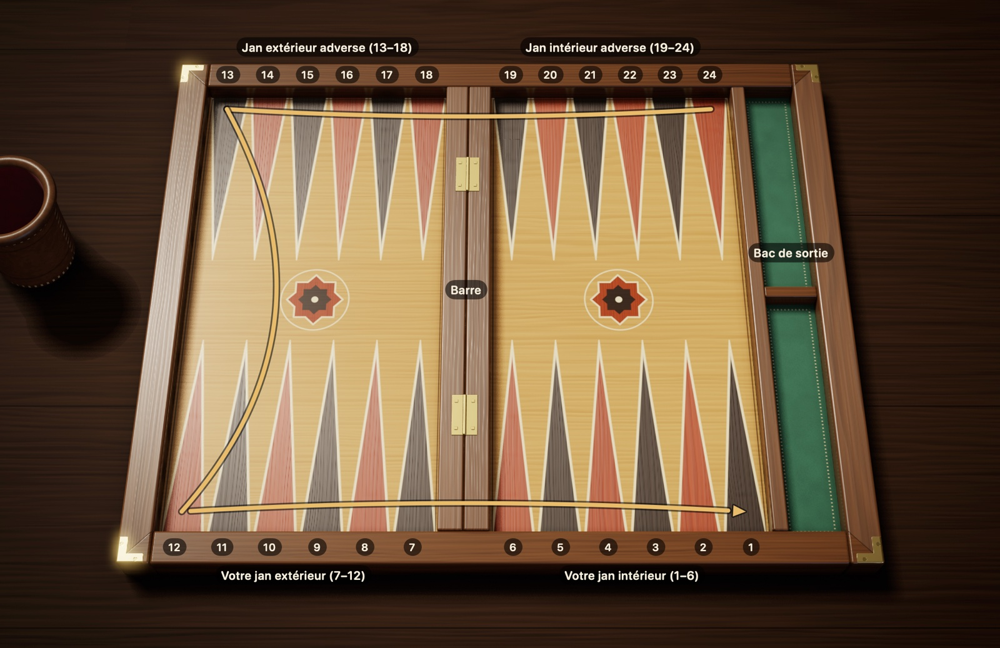
Figure 2.1Le tablier : 24 flèches, quatre quarts et la barre. Vous êtes en bas. Le trait doré montre le chemin de vos pions, de la flèche 24 à la flèche 1 ; votre adversaire fait le même chemin en sens inverse.
Les quarts du tablier. Imaginez le tablier comme un terrain divisé en quatre quarts, de six flèches chacun. Les deux quarts devant vous sont votre camp, les deux quarts d’en face celui de votre adversaire :
Votre jan intérieur (1–6) : là où le voyage se termine. Une fois arrivés ici, les pions sont retirés du tablier. En bas à droite sur la Figure 2.1.
Votre jan extérieur (7–12) : la dernière étape avant le jan intérieur. En bas à gauche.
Le jan extérieur adverse (13–18) : le milieu du parcours. En haut à gauche.
Le jan intérieur adverse (19–24) : là où le voyage commence. En haut à droite.
La barre. La séparation surélevée au milieu du tablier s’appelle la barre. Elle a deux rôles : elle sépare les moitiés gauche et droite du tablier, et c’est là qu’attendent les pions frappés. Elle ne compte pas quand on compte les flèches : un pion qui passe de la flèche 7 à la flèche 6 n’avance que d’un pas, même s’il franchit la barre.
La logique des numéros. Chaque joueur numérote les flèches à partir de son propre jan intérieur. Chaque triangle a donc deux noms : la flèche que vous appelez 1, votre adversaire l’appelle 24. Pour éviter toute confusion, tous les numéros de ce livre sont donnés de votre point de vue.
Le sens de la marche. Vos pions avancent toujours vers les numéros décroissants. Un pion qui part de la flèche 24, en haut à droite, longe d’abord le bord supérieur vers la gauche, redescend le long du bord gauche, puis suit le bord inférieur vers la droite jusqu’à votre jan intérieur. Les pions de l’adversaire font le même chemin en sens inverse ; c’est pourquoi les deux camps se croisent en route.
Tablier en miroir. Certains joueurs préfèrent placer leur jan intérieur à gauche. Tout le tablier est alors inversé comme dans un miroir, et les pions tournent dans le sens des aiguilles d’une montre. Du point de vue des règles, les deux dispositions sont strictement équivalentes.
2.2 La position de départ
Chaque partie commence dans la même position. Placez vos 15 pions sur quatre flèches, de la plus éloignée à la plus proche, de la façon suivante :
Flèche 24, 2 pions. Le coin du jan intérieur adverse. Cette paire, ce sont vos pions les plus éloignés de la maison.
Flèche 13, 5 pions. Le coin en haut à gauche, pile au milieu du parcours.
Flèche 8, 3 pions. Dans votre jan extérieur, à deux pas du jan intérieur.
Flèche 6, 5 pions. La première flèche de votre jan intérieur, côté barre.
2 + 5 + 3 + 5 : vous arrivez bien à 15. Comme votre adversaire installe la même disposition de son côté, ses pions se trouvent sur vos flèches 1, 12, 17 et 19. Si l’on pliait le tablier en son milieu, les deux camps se superposeraient exactement.
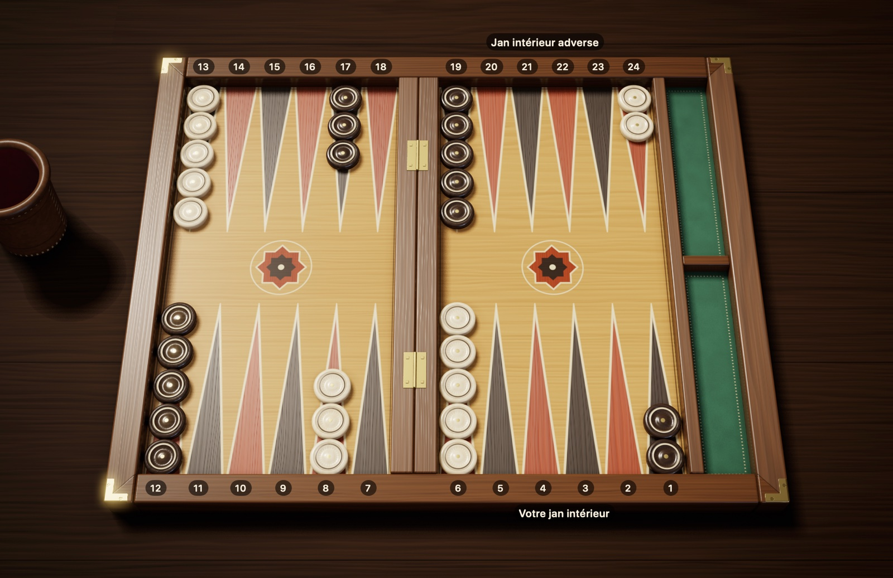
Figure 2.2Position de départ : 15 pions par joueur. Vos pions sont crème et votre jan intérieur est en bas à droite ; les pions adverses sont brun foncé, et leur jan intérieur est en haut à droite. Vous avez 2 pions sur la 24, 5 sur la 13, 3 sur la 8 et 5 sur la 6.
Un moyen mnémotechnique : retenez « 2-5-3-5 » et placez les pions en commençant par la flèche la plus reculée. Un tiers de vos pions (5 pions) est déjà dans votre jan intérieur, les autres sont répartis le long du parcours. L’essentiel de la partie consiste à ramener sans risque à la maison les pions restés en arrière.
2.3 Le début de la partie
Ce sont les dés qui décident qui joue le premier coup. Chaque joueur lance un seul dé, et le plus fort commence. En cas d’égalité, le lancer ne compte pas : les deux joueurs relancent jusqu’à obtenir des nombres différents.
Pour le premier coup du gagnant, il existe deux traditions :
Règle internationale : personne ne relance. Les deux dés sur la table, le vôtre et celui de votre adversaire, forment ensemble votre premier coup. Si vous avez fait 5 et l’adversaire 3, vous jouez 5-3. Comme les dés d’ouverture ne peuvent pas être égaux, ce premier coup n’est jamais un double.
Règle turque courante : le gagnant reprend les deux dés et fait un nouveau lancer. Ce lancer peut donner n’importe quel résultat, double compris.
Ensuite, les joueurs jouent à tour de rôle, en lançant deux dés à chaque tour.
Nouvelle partie. En règles internationales, chaque partie repart de zéro avec un lancer d’ouverture. Au tavla turc, c’est généralement le gagnant de la partie précédente qui commence.
Les usages du lancer. Autour d’une table, quelques usages sont de mise. Les dés sont généralement secoués dans le cornet, puis lancés dans la moitié droite du tablier. Un dé tombé de travers, resté sur un pion ou sorti du tablier ne compte pas : on relance les deux dés. La main passe à vous dès que votre adversaire reprend ses dés ; un lancer fait avant ce moment ne compte pas. Ce sont là les usages traditionnels ; sur ces détails, les règlements de tournoi peuvent différer selon qu’ils prévoient une pendule, des cornets ou quatre dés.
2.4 Règles turques et règles internationales
Dans les deux jeux de règles, le décompte des flèches, les règles des dés et la logique des cases sont les mêmes. Les différences portent sur le début de partie, le décompte des points et deux détails de jeu : au tavla turc courant, il est interdit de frapper et fuir dans son propre jan intérieur, et, pendant la sortie, de dépenser des pips quand on peut sortir un pion. Le tableau ci-dessous suit les règles courantes ; de petites différences peuvent exister d’une table à l’autre.
Dans Pions et Dés, vous pouvez jouer avec l’un ou l’autre jeu de règles. Là où les deux diffèrent, ce livre indique chacune des deux règles ; il vous suffit de choisir votre jeu de règles avant de commencer.
Tableau 2.1 Tavla turc et règles internationales
Sujet
International (avec videau)
Tavla turc courant
Premier coup
Joué avec les dés d’ouverture, jamais un double
Le plus fort relance les deux dés, un double est possible
Qui commence la partie suivante
Lancer d’ouverture à chaque partie
Le gagnant de la partie précédente
Frapper et fuir dans son jan intérieur
Autorisé
Interdit (dans Pions et Dés, se choisit pour chaque nouveau match ; autorisé par défaut)
Avancer un pion pendant la sortie alors qu’on pourrait en sortir un (« sallamak »)
Autorisé
Interdit (dans Pions et Dés, se choisit pour chaque nouveau match ; autorisé par défaut)
Backgammon
Oui (× 3)
Non, compte comme un gammon (× 2)
Videau
Standard, obligatoire en tournoi
Aucun
Règle de Crawford
Standard en match
Non
2.5 L’écran de jeu de Pions et Dés
Dès que le match commence, des zones indiquant l’état de la partie apparaissent autour du tablier. La Figure 2.3 a été prise pendant votre tour de jeu ; les numéros sont expliqués juste en dessous.
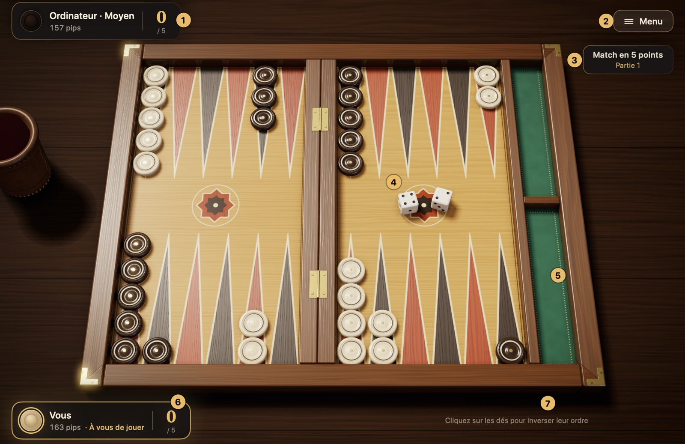
Figure 2.3L’écran de jeu de Pions et Dés. Les éléments numérotés sont expliqués dans la liste ci-dessous.
Plaque de l’adversaire : affiche votre adversaire avec son niveau de difficulté (par exemple « Ordinateur · Moyen »), son compte de pips et son score dans le match. Quand l’ordinateur réfléchit, on y lit « Réfléchit… ».
Menu : met la partie en pause. La fiche qui s’ouvre permet de reprendre, d’ouvrir les réglages, la fiche « Comment jouer », l’historique des coups et les matchs, d’abandonner et de quitter le match. La touche Échap fait de même.
Informations du match : indiquent en combien de points se joue le match (en session, on lit « Session ») et le numéro de la partie en cours. En règles internationales, l’indicateur du videau se trouve en dessous.
Dés : vos dés tombent dans la moitié droite du tablier, ceux de l’ordinateur dans la moitié gauche.
Bac de sortie : le bac vert à droite du tablier. Vos pions sortis s’alignent dans sa moitié inférieure, ceux de l’adversaire dans sa moitié supérieure.
Votre plaque : affiche votre compte de pips, votre score dans le match et, quand c’est à vous de jouer, la mention « À vous de jouer ».
Ligne d’aide : indique brièvement ce que vous pouvez faire à ce moment. Si vous tentez un coup non valable, vous y lisez aussi pourquoi, par exemple « Ce pion ne peut pas jouer avec ces dés ».
Boutons facultatifs. Si vous les activez dans les Réglages, trois autres boutons apparaissent en bas à droite : « Indice » marque sur le tablier le coup suggéré par le moteur Maître (⌘I) ; « Annuler » annule les déplacements joués pendant ce tour (⌘Z) ; « Valider », quand la validation automatique est désactivée, termine votre tour et passe la main à l’adversaire (Retour). Détails à la section 5.3.
Avant de jouer. Dans le panneau Nouveau match, vous choisissez le niveau de difficulté, les règles (tavla turc ou internationales), la longueur du match ou, en règles internationales, une session, ainsi que la couleur de vos pions. Ces choix valent pour tout le match ; détails à la section 5.1.
Comment se déroule un tour ? Quand c’est à vous, les dés sont lancés d’eux-mêmes et versés du cornet en cuir sur le tablier ; en règles internationales, au tour où vous pouvez doubler, l’application attend et c’est vous qui lancez, avec le bouton « Lancer les dés » ou la touche Espace. Vous jouez un pion en le faisant glisser, ou en cliquant d’abord sur le pion puis sur la flèche où il doit aller ; les pions jouables s’illuminent, et les flèches qu’ils peuvent atteindre sont entourées d’un cercle. Dès que vous jouez votre dernier déplacement, votre tour se termine et la main passe à l’adversaire. Si vous préférez lancer vous-même à chaque tour, valider votre tour avec « Valider » ou annuler des déplacements, vous le choisissez dans les Réglages ; détails à la section 5.3. De toute façon, l’application refuse tout coup contraire aux règles.
Que dit le compte des pips ? Le compte de pips affiché sur chaque plaque indique combien de flèches le joueur doit encore parcourir pour ramener tous ses pions à la maison et les sortir. Celui qui a le plus petit compte mène la course. Détails à la section 4.2.
Chapitre 3
Les règles du jeu
Ce chapitre présente toutes les règles du jeu, dans l’ordre : le déplacement des pions, les doubles, le coup forcé, les pions frappés et leur rentrée, la sortie, le décompte des points et le videau.
3.1 Le déplacement des pions
Le joueur dont c’est le tour lance deux dés et avance ses pions d’autant de flèches que les dés l’indiquent. Cette section explique pas à pas comment jouer un dé.
Lire les dés
Les dés indiquent de combien de flèches les pions avancent. Un dé qui montre 4 fait avancer un pion de 4 flèches. Pour compter, on ne compte pas la flèche où se trouve le pion : on commence à la suivante. Avec un 4, le pion de la flèche 13 compte 12, 11, 10, 9 et arrive sur la flèche 9.
Au backgammon, pas de marche arrière : un pion ne peut aller que vers des flèches de numéro plus petit, c’est-à-dire en se rapprochant de son jan intérieur.
Deux dés, deux coups distincts
Voyez vos deux dés comme deux droits distincts. Avec 5-3, vous les utilisez comme vous voulez :
Vous pouvez jouer le 5 avec un pion et le 3 avec un autre.
Vous pouvez aussi donner les deux au même pion et le faire avancer de 8 flèches en tout ; vous pouvez jouer d’abord le 3 ou d’abord le 5.
Quand vous jouez deux dés avec un seul pion, celui-ci fait en réalité deux sauts distincts et se pose un instant sur la flèche où se termine le premier saut. Cette flèche intermédiaire doit, elle aussi, être une flèche où le pion peut se poser. Impossible de compter d’un seul coup la somme des deux dés en sautant la flèche intermédiaire.
Figure 3.1Deux façons de jouer 5-3. Traits verts, 1re façon : 8→3 (5) et 6→3 (3) ; deux pions différents font une case sur la flèche 3. Traits bleus, 2e façon : 24→21 (3), puis 21→16 (5) ; le même pion avance de 8 flèches en tout. Ce pion ne peut pas jouer le 5 en premier : la flèche 19, encadrée de rouge, est une case adverse et ne peut pas servir d’étape intermédiaire.
L’inverse est vrai aussi : vous ne pouvez pas découper un dé. Répartir un 5 en 3 et 2 entre deux pions différents est contraire aux règles ; chaque dé revient en entier à un seul pion.
Où poser un pion ?
Quand vous avancez un pion, ce qui se trouve sur la flèche d’arrivée compte. Il y a quatre cas possibles :
Tableau 3.1 Peut-on se poser sur la flèche d’arrivée ?
Qu’y a-t-il sur la flèche d’arrivée ?
Peut-on s’y poser ?
Aucun pion (flèche vide)
Oui
Un ou plusieurs de vos pions
Oui, sans limite de nombre
Un seul pion adverse (un blot)
Oui, le pion adverse est frappé
Deux pions adverses ou plus (une case)
Non
Figure 3.2Flèches ouvertes et case. Pour le pion de la flèche 11 : la flèche 10 est vide, il peut s’y poser. Sur la 8 se trouvent vos propres pions : vous pouvez y ajouter autant de pions que vous voulez. Sur la 7, il y a un seul pion adverse (un blot) : vous pouvez vous y poser, et ce pion est frappé. Sur la 9, encadrée de rouge, il y a deux pions adverses (une case) : le trait rouge en pointillé indique que vous ne pouvez pas vous y poser.
On appelle case une flèche où se trouvent ensemble deux pions ou plus. Voyez la case comme un mur : l’adversaire ne peut ni s’y poser, ni s’en servir comme étape intermédiaire dans un coup à deux dés. Bien construire vos cases est le moyen le plus efficace de resserrer le passage de l’adversaire.
3.2 Les doubles
Quand les deux dés montrent le même nombre (de 1-1 à 6-6), vous recevez un bonus : ce nombre ne se joue pas deux fois, mais bien quatre. Le joueur qui fait 5-5 joue quatre coups de 5 et avance de 20 flèches en tout. Ces lancers s’appellent des doubles.
Vous pouvez répartir les quatre coups comme vous voulez : une fois sur quatre pions différents, deux fois sur deux pions, ou quatre fois sur un seul pion. Si un même pion fait plusieurs pas, chaque étape intermédiaire doit être ouverte.
Figure 3.3Les doubles : quatre coups avec 4-4. Amenez les deux pions de la flèche 24 sur la 20 (4 + 4), et descendez deux pions de la 13 sur la 9 (4 + 4). Chacun des quatre coups vaut 4 flèches ; vous pouvez les répartir entre les pions de votre choix.
3.3 Le coup forcé
Une fois les dés lancés, vous n’avez pas le droit de dire « je passe ». Si les dés permettent un coup, vous êtes obligé de le jouer. Pour savoir quels dés utiliser, et dans quelle mesure, posez-vous les questions suivantes :
Existe-t-il un coup qui utilise les deux dés ? Si oui, vous devez le jouer. Si le premier coup qui vous vient à l’esprit gaspille un dé, cherchez une autre façon de jouer où les deux dés passent.
Un seul dé est-il jouable ? Vous jouez alors ce dé-là, et l’autre est perdu.
Chaque dé passe-t-il seul, mais pas les deux ensemble ? Dans ce cas, vous n’avez pas le choix : vous jouez le dé le plus fort. La Figure 3.4 en donne un exemple.
Et si aucun dé n’est jouable ? Votre tour est perdu, et la main passe à l’adversaire.
Vous avez fait un double ? Si les quatre coups ne passent pas tous, vous devez jouer le plus grand nombre de coups légalement possible ; si l’ordre des coups change ce nombre, vous devez choisir l’ordre qui permet d’en jouer le plus. Les coups restants sont perdus.
Figure 3.4Règle du dé le plus fort : 6-5. Le pion de la flèche 14 peut aller sur la 8 avec le 6 (trait vert) ou sur la 9 avec le 5 (trait en pointillé), mais il ne peut pas jouer les deux : dans les deux cas, le second pas mènerait sur la flèche 3 (cadre rouge), qui est une case adverse. Vos autres pions, tout au fond du jan intérieur, ne peuvent jouer aucun dé. Quand chaque dé est jouable seul mais pas les deux ensemble, on joue le plus fort : 14→8.
Ces règles ne laissent parfois qu’un seul coup possible ; on parle alors de coup forcé. Au backgammon numérique, l’application contrôle elle-même ces règles et refuse tout coup irrégulier ; sur un vrai tablier, c’est à vous d’y veiller.
3.4 Frapper un blot
Ce qui rend le backgammon palpitant, c’est qu’on peut frapper les pions adverses. Il faut d’abord bien distinguer deux situations :
Blot : un pion resté seul sur une flèche. Il est sans protection : si l’adversaire se pose dessus, il est chassé de sa place.
Case : une flèche occupée par au moins deux pions de la même couleur. Les pions qui s’y trouvent sont intouchables.
Quand vous posez un pion sur la flèche où se trouve un blot adverse, vous frappez ce blot. Le pion frappé est retiré du tablier et placé sur la barre, au milieu. Pour l’adversaire, c’est un sérieux recul : ce pion doit refaire tout le parcours depuis le début, et tant qu’il n’est pas revenu sur le tablier, l’adversaire a les mains liées.
Figure 3.5Frapper : 13→9 frappe le blot. Avec le 4, 13→9 : en vous posant sur le pion isolé de l’adversaire, vous le frappez ; le pion frappé part sur la barre (trait en pointillé). Avec le 2, 11→9 : vous amenez un second pion et faites une case sur la 9 ; vous ne pouvez plus être frappé.
À savoir :
Frapper n’est pas obligatoire. Même si vous pouvez frapper un blot, vous pouvez choisir de jouer un autre coup.
Après avoir frappé, vous pouvez continuer votre route avec le même pion. Par exemple, avec 4-2, vous pouvez avancer un pion de 4 flèches pour frapper, puis l’avancer encore de 2 flèches. On appelle cela « frapper et fuir » (« vur kaç » en turc). En règles internationales, c’est permis partout sur le tablier ; au tavla turc courant et au portes grec, en revanche, il est interdit, après avoir frappé dans son propre jan intérieur, de repartir avec le même pion. Dans Pions et Dés, quand vous jouez avec les règles turques, vous pouvez activer cette interdiction avec l’option « Frapper et fuir interdit » du panneau Nouveau match ; elle est désactivée par défaut.
Vous pouvez frapper plusieurs blots dans le même coup ; par exemple, un pion peut frapper un blot sur son étape intermédiaire, puis un autre à son arrivée.
Les mêmes règles valent pour vous. Un pion que vous laissez seul est frappé si les dés de l’adversaire le permettent. C’est pourquoi, autant que possible, essayez de garder vos pions par deux.
3.5 Faire rentrer un pion frappé
Quand l’un de vos pions a été frappé, vous n’avez qu’une priorité à votre tour : le remettre sur le tablier. Tant qu’un de vos pions attend sur la barre, vos autres pions sont comme gelés.
Par où rentre-t-il ? Le pion frappé reprend le parcours depuis le début, c’est-à-dire depuis le jan intérieur adverse. C’est le dé qui décide de la flèche où il rentre. Comptez les flèches du jan intérieur adverse de 1 à 6, du bord vers la barre : avec un 1, vous rentrez sur la flèche du coin du tablier ; avec un 6, sur la flèche voisine de la barre. Selon votre numérotation :
Tableau 3.2 Flèche de rentrée du pion frappé selon le dé
Dé
Flèche de rentrée
1
24
2
23
3
22
4
21
5
20
6
19
La flèche indiquée par le dé peut être vide, porter vos propres pions ou un seul pion adverse. Dans ces trois cas, vous rentrez ; dans le dernier, vous frappez ce pion en rentrant. Seule une case adverse vous est fermée.
Figure 3.6Faire rentrer un pion frappé : 5-2. Votre pion sur la barre rentre dans le jan intérieur adverse : sur la 24 avec un 1, sur la 23 avec un 2 … sur la 19 avec un 6. Avec le 5, impossible de rentrer : la flèche 20 est une case adverse (cadre rouge). Avec le 2, vous rentrez sur la flèche 23, qui est vide (cadre vert). Une fois rentré, vous jouez le 5 avec un autre pion ou avec celui qui vient de rentrer.
La rentrée pas à pas :
Lancez les dés et regardez à quelle flèche du jan intérieur adverse correspond chaque dé.
Si au moins une de ces flèches vous est ouverte, posez-y votre pion.
La rentrée utilise un dé. L’autre dé reste libre : vous le jouez avec le pion de votre choix, y compris celui qui vient de rentrer.
Si vous avez deux pions sur la barre, les deux dés servent aux rentrées. Si un seul peut rentrer, vous le faites rentrer ; comme le second pion reste sur la barre, vous ne pouvez jouer aucun autre coup à ce tour.
La rentrée se fait avec un seul dé. Supposons que vous ayez fait 5-2 ; les flèches 20 et 23 sont des cases adverses, et la flèche 18 est vide. Vous ne pouvez pas additionner les deux dés et compter 7 flèches pour vous poser directement sur la 18. Le pion doit d’abord rentrer, avec un seul dé, sur une flèche ouverte du jan intérieur adverse ; ici, les deux sont fermées, donc il ne rentre pas.
Rester sur la barre
Si les flèches indiquées par les deux dés sont toutes deux des cases adverses, votre pion ne peut pas rentrer à ce tour. Avec ce lancer malchanceux, vous restez sur la barre. Comme aucun autre pion ne peut jouer tant qu’un pion attend sur la barre, votre tour est perdu ; vous retenterez votre chance au tour suivant.
Être bloqué
Le pire des cas, c’est quand les six flèches du jan intérieur adverse sont toutes des cases. Quels que soient les dés, il n’y a alors aucune flèche où rentrer : vous êtes bloqué. Tant que l’adversaire n’a pas cassé une de ses cases, votre tour passe à chaque fois sans que vous jouiez ; autour d’une table, il n’est même pas nécessaire de lancer les dés, la main passe directement à l’adversaire. Il en va de même dans Pions et Dés : les dés ne sont pas lancés, l’écran signale que vous êtes « bloqué » et la main passe directement à l’adversaire.
Figure 3.7Bloqué : le jan intérieur adverse est entièrement fermé. Votre pion sur la barre pourrait rentrer sur n’importe quelle flèche ouverte entre 19 et 24, mais les six flèches sont toutes des cases (cadres rouges). Vous êtes bloqué : tant que l’adversaire n’a pas ouvert une de ses cases, votre tour passe sans que les dés soient lancés.
3.6 La sortie des pions
La dernière ligne droite de la course consiste à retirer les pions du tablier : c’est la sortie. Elle a une condition préalable : tous vos pions encore sur le tablier doivent se trouver dans votre jan intérieur, c’est-à-dire sur les flèches 1 à 6. Si un seul de vos pions est encore dehors ou attend sur la barre, vous ne pouvez pas commencer la sortie.
La règle de base
La règle est simple : le nombre du dé indique la flèche d’où vous sortez un pion. Avec un 6, vous retirez un pion de la flèche 6 ; avec un 2, un pion de la flèche 2, et vous le posez dans l’espace prévu au bord du tablier. Un pion sorti quitte définitivement la partie.
Figure 3.8Sortie : deux pions avec 6-4. Avec le 6, vous prenez un pion sur la flèche 6, avec le 4 un pion sur la flèche 4, et vous les posez dans le bac de sortie, à droite. La sortie ne commence que lorsque vos 15 pions sont tous dans votre jan intérieur.
Si la flèche du dé est vide
Il arrive que la flèche indiquée par le dé soit vide. Posez-vous alors ces deux questions, dans l’ordre :
Ai-je un pion sur une flèche de numéro plus élevé ? Si oui, vous ne pouvez pas utiliser ce dé pour sortir un pion d’une flèche plus basse ; en général, vous jouez le dé en avançant un pion de cette flèche plus élevée.
Je n’ai aucun pion plus haut ? Vous sortez alors un pion de la flèche la plus haute que vous occupez. Par exemple, si votre pion le plus éloigné est sur la 4, un 6 comme un 5 permet de le sortir.
Figure 3.9Sortie : s’il y a un pion plus haut, on l’avance. Pour le 5 : la flèche 5 est vide, mais la flèche 6, plus haute, porte des pions ; avec le 5, vous ne pouvez sortir ni de la 3 ni de la 1. Vous jouez le 5 en avançant un pion de la 6 (6→1), puis, avec le 1, vous sortez un pion de la flèche 1. Autre possibilité : d’abord 6→5 avec le 1, puis sortir ce pion de la flèche 5 avec le 5. Le bac de sortie contient déjà 10 pions sortis auparavant.Figure 3.10Sortie : depuis la flèche la plus haute. Il ne vous reste aucun pion sur les flèches 6 et 5, ni plus haut. Dans ce cas, avec chacun des deux dés, vous sortez un pion de la flèche occupée la plus haute, ici la 4.
Vous n’êtes pas obligé de sortir
Si vous avez un autre coup conforme aux règles, vous n’êtes pas obligé de sortir un pion. Faire glisser des pions plus loin dans votre jan intérieur pour remettre la sortie à plus tard se dit, en turc, « sallamak ». C’est parfois le choix le plus sage, pour ne pas laisser à l’adversaire un blot à frapper. Vous pouvez aussi avancer un pion avec un dé et le sortir du tablier avec l’autre. Cette liberté relève de la règle internationale ; au tavla turc courant, avancer un pion avec un petit dé, et dépenser ainsi des pips, alors qu’on pourrait sortir un pion est considéré comme interdit. Dans Pions et Dés, quand vous jouez avec les règles turques, vous pouvez activer cette interdiction avec l’option « Sortie obligée » du panneau Nouveau match ; elle est désactivée par défaut.
Si vous êtes frappé pendant la sortie
Si l’adversaire a un pion qui attend dans votre jan intérieur, un blot que vous laissez pendant la sortie peut être frappé. La sortie s’interrompt alors : le pion frappé doit d’abord rentrer par le jan intérieur adverse, puis faire le tour du tablier pour revenir dans votre jan intérieur. Quand tous vos pions restés sur le tablier sont de nouveau réunis dans votre jan intérieur, vous reprenez là où vous en étiez.
3.7 Fin de partie et points
Le premier qui a sorti tous ses pions remporte la partie. L’ampleur du gain dépend, elle, du retard de votre adversaire au moment où la partie s’achève. À la fin de la partie, regardez les pions de l’adversaire ; l’une des trois situations suivantes s’applique :
Tableau 3.3 Résultat de la partie et points
Résultat
Situation de l’adversaire
International, sans videau
International, avec videau
Tavla turc
Partie simple
A sorti au moins un pion
1
Valeur du videau × 1
1
Gammon
N’a sorti aucun pion
2
Valeur du videau × 2
2
Backgammon
N’a sorti aucun pion et a encore un pion sur la barre ou dans votre jan intérieur
3
Valeur du videau × 3
2 (compte comme un gammon)
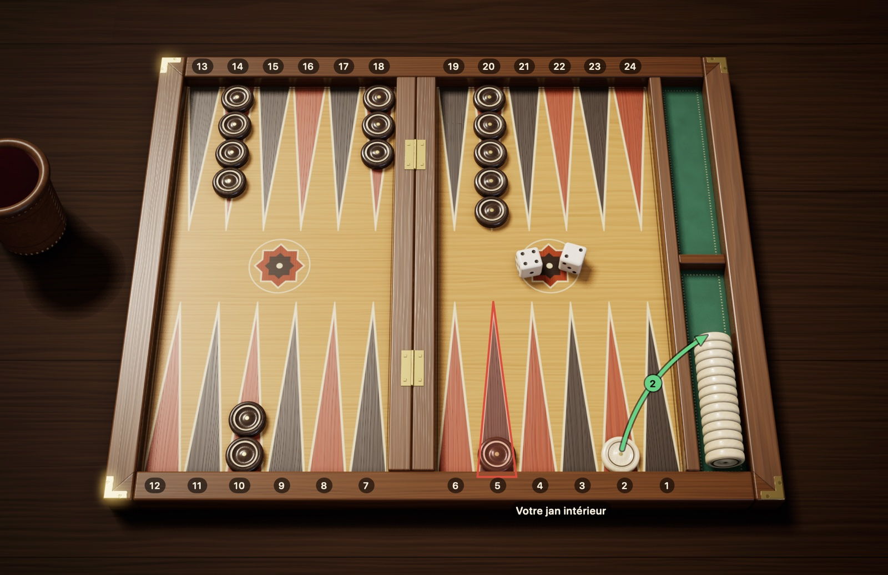
Figure 3.11Backgammon : l’adversaire n’a rien sorti et a un pion dans votre jan intérieur. Avec le 2, vous avez sorti votre dernier pion et gagné la partie. L’adversaire n’a sorti aucun pion : à lui seul, cela fait un gammon (2 points). De plus, il a encore un pion sur la flèche 5, encadrée de rouge, c’est-à-dire dans votre jan intérieur : c’est un backgammon (3 points).
Exemples :
Si, quand vous sortez votre dernier pion, l’adversaire en a sorti 4, vous gagnez une partie simple : 1 point.
Si l’adversaire n’a pas sorti un seul pion, mais qu’il n’en a plus ni sur la barre ni dans votre jan intérieur, vous faites un gammon : 2 points.
Si l’adversaire n’a sorti aucun pion et qu’il a encore un pion sur la barre ou dans votre jan intérieur, vous faites un backgammon : 3 points.
Le joueur qui fait un gammon alors que le videau est sur 8 marque 8 × 2 = 16 points.
Au tavla turc, le backgammon n’est pas un résultat à part : cette situation compte aussi comme un gammon et rapporte 2 points. Mettez-vous d’accord avant la partie sur le jeu de règles utilisé.
Le score du match. Le plus souvent, on ne joue pas une seule partie, mais un match en un nombre de points fixé ; en tournoi, c’est généralement 5, 7 ou 11 points. À la fin de chaque partie, les points du gagnant sont inscrits à son compte ; si l’on joue avec le videau, ils sont multipliés par la valeur du videau. Le premier qui atteint le nombre de points visé gagne le match. C’est pourquoi faire un gammon, ou l’éviter, peut changer l’issue du match.
3.8 Le videau
Le videau est un cube qui porte des nombres, mais qu’on ne lance jamais. Ses faces portent 2, 4, 8, 16, 32 et 64, et il indique seulement la valeur de la partie à ce moment-là. On le voit rarement dans le tavla de quartier, en Turquie ; en revanche, il est incontournable dans les tournois internationaux et les matchs en ligne. Pions et Dés propose aussi le videau : il est utilisé quand vous choisissez les règles internationales en début de partie ; doubler et répondre à une proposition sont expliqués à la section 5.4. Si vous jouez sans videau, vous pouvez sauter cette section.
Place et signification du videau
Au début de la partie, le videau est posé au centre, entre les deux joueurs, et sa face supérieure montre 64. Comme le cube ne porte pas de 1, ce 64 signifie ici « pas encore doublé, la partie vaut 1 point ». Tant que le videau est au centre, chacun des deux joueurs peut faire la première proposition. Une fois une proposition acceptée, le côté où se trouve le videau indique qui a le droit de faire la proposition suivante. Dans Pions et Dés, le videau est affiché sous les informations du match, en haut à droite : au début, on lit « 1 Videau au centre » ; après un double accepté, on lit, avec la valeur du videau, « Videau à vous » ou « Videau à l’adversaire ».
Doubler, pas à pas
Quand ? On ne peut proposer le videau qu’à son propre tour, avant de toucher aux dés. Une fois les dés lancés, l’occasion est passée pour ce tour.
Comment ? Si vous estimez que votre position est bonne, tournez le videau sur la valeur suivante (2 la première fois), tendez-le à l’adversaire et dites « je double ». Cela signifie : « On joue cette partie pour le double ? »
Que peut faire l’adversaire ?
Il accepte : il prend le videau de son côté, la valeur doublée (2 au premier double) tournée vers le haut ; la partie continue depuis la même position, mais vaut désormais le double.
Il refuse : il abandonne la partie sur-le-champ. Il perd la valeur qu’avait le videau avant la proposition ; à la première proposition, c’est 1 point.
À qui la proposition suivante ? Le videau passe au joueur qui a accepté, et lui seul a le droit de redoubler. C’est pourquoi les propositions alternent toujours : un même joueur ne peut pas doubler deux fois de suite.
Exemple
Supposons qu’en début de partie votre adversaire ait doublé et que vous ayez accepté ; le videau est sur 2, de votre côté. Quelques tours plus tard, la partie tourne en votre faveur : vous tournez le videau sur 4 et le tendez à l’adversaire. S’il refuse, vous gagnez la partie et marquez 2 points. S’il accepte, le videau passe de son côté, sur 4, et à la fin de la partie, les points gagnés se lisent sur la ligne « 4 » du Tableau 3.4.
Tableau 3.4 Points gagnés selon la valeur du videau
Videau
Partie simple
Gammon
Backgammon
Au centre (1)
1
2
3
2
2
4
6
4
4
8
12
8
8
16
24
À savoir :
Il n’y a pas de plafond : après 64, la valeur continue de doubler, 128, 256, et ainsi de suite. Il est toutefois très rare de monter aussi haut.
Si c’est à vous de doubler, avoir un pion en attente sur la barre ne vous empêche pas de faire une proposition. Dans Pions et Dés, la seule exception, c’est quand vous êtes bloqué : si le jan intérieur adverse est entièrement fermé, votre tour passe sans que les dés soient lancés, et vous ne pouvez pas non plus doubler à ce tour.
Doubler ou non, accepter ou non : ce sont parmi les décisions les plus importantes du jeu ; les repères se trouvent dans la rubrique suivante.
Décisions de videau
Bien utiliser le videau est l’une des compétences les plus fines du backgammon. Ce qui suit n’est pas un ensemble de règles absolues, mais de bons repères pour débuter.
Pour accepter : quand on vous propose le videau, posez-vous à peu près cette question : « Si je jouais cette partie quatre fois, en gagnerais-je au moins une ? » Si vos chances de gagner sont d’environ une sur quatre, ou plus, accepter est généralement la bonne décision. En effet, si vous refusez, votre perte est acquise ; si vous acceptez, vous gardez une chance de renverser la partie et de vous servir plus tard du videau à votre avantage. Ce seuil de 25 % vient du modèle le plus simple, qui ne tient compte ni des gammons ni des redoublements : posséder le videau abaisse un peu le seuil, le risque de gammon le relève, et le score du match peut le faire bouger dans un sens comme dans l’autre.
Pour proposer : si votre position est nettement meilleure mais que la partie n’est pas encore gagnée, le moment est venu de doubler. Évitez trois erreurs :
Doubler trop tôt : un double proposé avec un léger avantage offre à l’adversaire à la fois une acceptation confortable et la possession du videau.
Doubler trop tard : votre position s’améliore tellement que l’adversaire n’accepte plus et abandonne la partie pour 1 point ; or, un tour plus tôt, il aurait accepté, et vous auriez joué pour le double. C’est ce qu’on appelle « perdre son marché ».
Position trop bonne pour doubler : la position peut être si forte que l’adversaire refuserait à coup sûr. Si le gain que vous attendez en continuant à jouer sans toucher au videau, grâce au gammon, dépasse le gain de 1 point que vous apporterait le refus de l’adversaire, la position est « trop bonne pour doubler ». Ce critère ne vaut pas dans les sessions où s’applique la règle Jacoby : là, tant que personne n’a doublé, un gammon ne compte que 1 point, et il faut donc tourner le videau. En match aussi, le score modifie la valeur du gammon.
La règle des 8-9-12 dans une course pure. Quand le contact est terminé et que la partie n’est plus qu’une course aux pips, c’est le compte des pips qui décide. Calculez l’écart en pourcentage, en le divisant par le compte des pips du joueur en tête ; si c’est vous qui êtes derrière, divisez aussi par le compte de l’adversaire, c’est-à-dire du meneur :
Tableau 3.5 La règle des 8-9-12 dans une course pure
Écart de pips (par rapport au compte du meneur)
Décision
8 % d’avance
Envisagez le premier double
9 % d’avance
Si le videau est à vous, redoublez
Jusqu’à 12 % de retard
Si l’on vous double, acceptez
Plus de 12 % de retard
Refusez
Exemple : si votre compte est de 80 pips et celui de l’adversaire de 88, vous avez 8 pips d’avance ; cela fait 10 % de 80, le compte du meneur, et vous êtes dans la zone de double. Comme la règle repose sur le compte brut des pips, soyez un peu plus prudent si vos pions sont entassés sur les flèches basses. La règle s’applique quand c’est à vous de jouer, que le contact est entièrement terminé et que la course est de longueur moyenne ou longue ; quand la partie se réduit aux derniers pions, il faut regarder où se trouvent les pions plutôt que calculer un pourcentage, et, en match, évaluer aussi le score.
Règles de match et de session
Règle de Crawford : en match, quand l’un des joueurs arrive pour la première fois à un point du but (à 4 points dans un match en 5 points), le videau n’est pas utilisé pendant la partie suivante, et seulement pendant celle-là ; on l’appelle la partie Crawford. Une fois cette partie terminée, le videau reprend du service et reste libre jusqu’à la fin du match. La règle ne s’applique qu’une fois par match : si l’autre joueur arrive ensuite au même score, il n’y a pas de nouvelle partie Crawford. Le but est d’empêcher le joueur mené de doubler aussitôt à chaque partie pour combler l’écart en une seule partie. La règle doit son nom au joueur américain John R. Crawford.
Règles optionnelles (on les voit en session ; elles ne s’utilisent pas en match) :
Doubles automatiques : si les dés d’ouverture sont égaux, le videau passe automatiquement sur 2 et reste au centre. On limite généralement cela à une fois par partie.
Beaver : le joueur doublé peut, en acceptant, redoubler aussitôt une fois de plus, et le videau reste de son côté. Le doubleur peut accepter le beaver ou refuser ; s’il refuse, il perd la valeur de son double, soit 2 points au premier double.
Raccoon : le joueur qui subit un beaver, c’est-à-dire celui qui a doublé le premier, peut aussitôt redoubler encore. Le videau reste du côté du joueur qui a accepté le double ; l’autre accepte la nouvelle valeur ou abandonne la partie à la valeur en cours. Comme le beaver, il ne se voit qu’en session.
Règle Jacoby : si personne n’a doublé pendant la partie, gammon et backgammon ne comptent que 1 point. Elle incite le joueur en tête à doubler plutôt qu’à courir après le gammon.
Chapitre 4
Mieux jouer
Une fois les règles apprises, voici les bases pour bien jouer : un exemple de partie, le compte des pips, les coups d’ouverture, les plans de jeu, le risque de laisser un blot et la stratégie de sortie.
4.1 Exemple de partie : les cinq premiers tours
Pour voir les règles en action, suivons pas à pas les cinq premiers tours d’une partie. Le tablier est en position de départ, et nous jouons avec les règles internationales. Les numéros des flèches sont donnés de votre point de vue.
Les dés d’ouverture. Vous faites 3, votre adversaire 1. C’est vous qui avez le dé le plus fort : vous jouez votre premier coup avec ce 3-1. Vous jouez 8→5 avec le 3 et 6→5 avec le 1, et faites ainsi une case sur la flèche 5. C’est l’un des coups d’ouverture les plus recommandés.
L’adversaire fait 6-4. Il fait courir l’un de ses pions arrière : le pion posé sur votre flèche 1 va sur la 7 avec le 6, puis sur la 11 avec le 4. Ce pion reste seul sur la 11 : c’est un blot.
Vous faites 4-2. Avec le 2, vous jouez 13→11 et frappez le blot adverse ; le pion adverse part sur la barre. Avec le 4, vous jouez 24→20.
L’adversaire fait 5-5. Comme il a un pion sur la barre, il doit d’abord le faire rentrer. Avec un 5, il devrait rentrer sur votre flèche 5, mais vous y avez une case. Comme ses quatre coups sont tous des 5, votre adversaire reste sur la barre : il ne peut jouer aucun pion à ce tour.
Vous faites 6-5. Vous emmenez votre pion resté sur la 24 jusqu’à la 18 avec le 6, puis jusqu’à la 13 avec le 5. Comme la 18 est vide, l’étape intermédiaire est libre ; sur la 13, vous avez déjà des pions.
Au bout de ces cinq tours, le tablier se présente comme sur la Figure 4.1 :
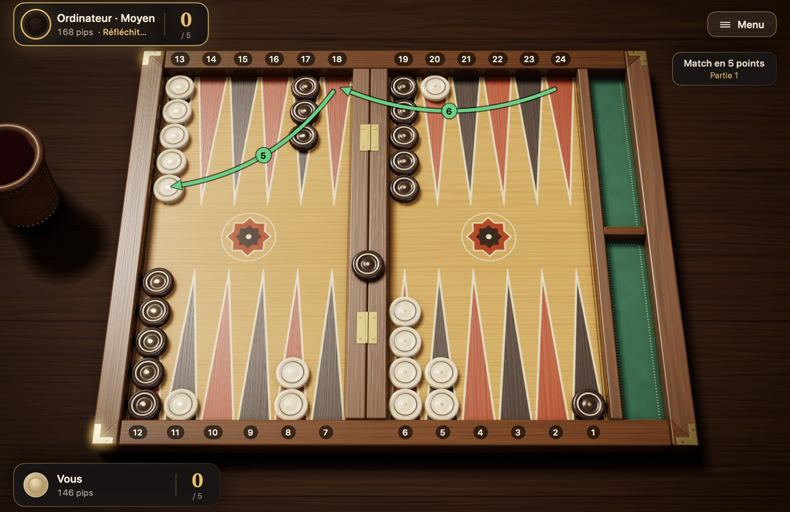
Figure 4.1Exemple de partie : la position après le cinquième tour. Dernier tour : avec 6-5, le pion de la 24 a couru jusqu’à la 18, puis jusqu’à la 13 (traits verts). Un pion adverse attend sur la barre ; votre case sur la flèche 5 lui complique la rentrée. Vos blots sont sur la 20 et la 11. Comptes de pips sur les plaques des joueurs : vous 146, l’adversaire 168 ; c’est à l’adversaire de jouer.
En cinq tours, toutes les règles ont servi : le déplacement, la construction d’une case, le pion frappé, la rentrée et le pion qui reste sur la barre. La partie continue ainsi jusqu’à ce que les deux camps aient ramené leurs pions dans leur jan intérieur et les aient sortis.
4.2 Le compte des pips
Le backgammon étant une course, la question « qui est le plus près de la maison ? » compte énormément à tout moment de la partie. Elle se mesure par le compte des pips : le nombre total de flèches qu’un joueur doit encore parcourir pour ramener tous ses pions dans son jan intérieur et les sortir du tablier.
Comment le calculer ? La distance de chaque pion est le numéro de sa flèche dans votre propre numérotation. Un pion sur la flèche 6 est à 6 pips, un pion sur la flèche 13 à 13 pips. Un pion sur la barre est le plus éloigné de tous et compte pour 25. Vous additionnez les distances de tous vos pions.
Par exemple, au départ : 2 × 24 + 5 × 13 + 3 × 8 + 5 × 6 = 48 + 65 + 24 + 30 = 167 pips. Les deux joueurs commencent la partie avec 167. À chaque coup, votre compte diminue du chemin réellement parcouru par le pion (pendant la sortie, si vous sortez un pion de la flèche la plus haute avec un dé plus fort, la baisse est égale au numéro de la flèche du pion, et non à la valeur du dé) ; un pion frappé, lui, retourne sur la barre et fait grimper d’un coup le compte de son propriétaire.
Dans Pions et Dés, vous n’avez pas besoin de le calculer. Le compte des pips affiché sur les plaques des joueurs se met à jour tout seul après chaque coup. Dans l’exemple de partie de la section 4.1, vous êtes à 146 pips et l’adversaire à 168 ; vous avez donc une avance d’environ trois lancers.
À quoi sert cette information ?
Si vous êtes en tête, éviter le contact et rentrer vite à la maison est généralement un bon plan.
Si vous êtes en retard, il est difficile de gagner à la seule course ; vous guettez les occasions de frapper les pions adverses ou de leur barrer la route.
Si vous jouez avec le videau, dans une course pure, c’est l’écart de pips qui guide les décisions de videau. Ce qu’il faut faire selon l’écart est expliqué dans la rubrique « Décisions de videau » de la section 3.8.
4.3 Les coups d’ouverture
Comme le premier coup de la partie se joue toujours depuis la même position, les bonnes façons de jouer chaque lancer ont été en grande partie établies par les analyses informatiques. Le Tableau 4.1 donne les coups généralement admis pour les parties jouées avec les règles internationales, sans tenir compte du score d’un match ; en match, le score peut modifier certains choix. La notation est « départ/arrivée » : 8/5 signifie de la flèche 8 à la flèche 5 ; (2) indique que le même déplacement est joué avec deux pions.
Tableau 4.1 Coups d’ouverture en règles internationales
Dés
Coup conseillé
Alternative raisonnable
Objectif
3-1
8/5 6/5
—
Case sur la flèche 5
4-2
8/4 6/4
—
Case sur la flèche 4
6-1
13/7 8/7
—
Case sur la flèche 7, pour barrer le passage devant le jan intérieur
5-3
8/3 6/3
—
Case sur la flèche 3
6-5
24/13
—
Sauver un pion arrière en un seul coup
6-4
24/14
24/18 13/9 ou 8/2 6/2
Les trois coups se valent presque
6-3
24/18 13/10
24/15
Se développer à la fois à l’arrière et au milieu
6-2
24/18 13/11
24/16
Se développer à la fois à l’arrière et au milieu
5-4
24/20 13/8
13/9 13/8
Une ancre possible à l’arrière, un nouveau pion au milieu
5-2
13/8 24/22
13/8 13/11
Développement sûr depuis le milieu
5-1
13/8 24/23
13/8 6/5
Un pion en sécurité, séparer les pions arrière
4-3
13/10 13/9
24/21 13/9 ou 24/20 13/10
Amener des pions constructeurs pour bâtir le jan intérieur
4-1
24/23 13/9
13/9 6/5
Séparer les pions arrière, un nouveau pion au milieu
3-2
24/21 13/11
13/11 13/10
Séparer les pions arrière, un nouveau pion au milieu
2-1
13/11 6/5
13/11 24/23
Préparer la case 5 ou séparer les pions arrière
Les coups du Tableau 4.1 s’appuient sur les analyses informatiques du site Backgammon Galore. Ceux de la colonne « Alternative raisonnable » sont aussi de bons coups ; dans les analyses, l’écart entre eux est minime, et vous pouvez choisir selon votre style de jeu. Les débutants qui veulent jouer prudemment peuvent préférer 13/11 24/23 avec 2-1, et avec 6-4, 8/2 6/2, qui ne laisse aucun blot. Pour comparer : le blot laissé par 24/14 est frappé par 11 lancers sur 36 ; des deux blots laissés par 24/18 13/9, au moins un est frappé par 27 lancers sur 36.
En règle internationale, le premier coup n’est jamais un double. Si vous jouez avec la règle turque, le premier lancer peut aussi être un double ; les coups suivants sont alors un bon début :
Tableau 4.2 Premier lancer double en règle turque
Double
Coup conseillé
6-6
24/18(2) 13/7(2)
5-5
13/3(2)
4-4
24/20(2) 13/9(2)
3-3
8/5(2) 6/3(2)
2-2
13/11(2) 6/4(2)
1-1
8/7(2) 6/5(2)
Inutile d’apprendre ces tableaux par cœur. Mais il est instructif d’en voir la logique commune : si possible, faites de nouvelles cases dans votre jan intérieur ou juste devant ; sinon, mobilisez vos pions arrière, et ne laissez pas de pions seuls là où ils seraient faciles à frapper.
4.4 Les grands plans de jeu
La plupart des parties de backgammon prennent la forme de l’un ou l’autre de quelques plans familiers. L’écart de pips et les cases présentes sur le tablier déterminent celui qui vous convient. Il est normal aussi de passer d’un plan à l’autre au fil de la partie.
Jeu de course : si vous êtes en tête au compte des pips, vous rompez le contact avec l’adversaire et ramenez vite tous vos pions à la maison. Une fois le contact rompu, la partie devient une pure course de dés, et celui qui mène gagne généralement.
Jeu d’attente (ancre) : vous tenez une case avec deux pions dans le jan intérieur adverse. Cette « ancre » vous évite d’être frappé et vous donne une chance de frapper l’adversaire s’il laisse un blot en rentrant chez lui. Quand vous êtes en retard, c’est le plan le plus solide.
Jeu de prime : en faisant des cases côte à côte, vous dressez une barrière devant les pions arrière de l’adversaire. Avec six cases consécutives, le pion enfermé derrière ne peut passer avec aucun lancer ; vous faites alors glisser la prime peu à peu vers votre jan intérieur pour étouffer l’adversaire.
Blitz : vous frappez encore et encore les pions adverses qui entrent dans votre jan intérieur, tout en fermant celui-ci au plus vite. Un blitz réussi laisse l’adversaire bloqué et rapporte souvent un gammon ; mais s’il échoue, vous laissez derrière vous vos propres blots.
Back game : quand vous êtes très en retard, vous tenez deux ancres dans le jan intérieur adverse et attendez que l’adversaire laisse un blot en rentrant ses pions. C’est un plan de sauvetage, pas un début de partie à choisir délibérément.
Ce sont des intuitions, pas des règles mécaniques. Le timing, la qualité de vos cases, la situation des pions arrière et le risque de gammon peuvent exiger le contraire de ce qu’indique l’écart de pips : abandonner aussitôt une prime solide sous prétexte d’une grosse avance aux pips serait une erreur, tout comme arrêter un blitz qui marche bien simplement parce qu’on est en retard.
4.5 Le risque de laisser un blot
Parfois, vous ne pouvez pas éviter de laisser un pion seul. La question devient alors : où le laisser pour qu’il soit le moins souvent frappé ? La réponse dépend de la distance entre le blot et le pion adverse qui peut le frapper.
Figure 4.2Probabilité qu’un blot soit frappé, selon la distance. Un blot à 6 flèches est le plus exposé ; à 7 flèches et au-delà, le risque chute brutalement. Les barres indiquent combien des 36 lancers possibles de l’adversaire frappent votre blot (s’il n’y a pas de case entre les deux).
La Figure 4.2 permet de tirer trois leçons pratiques :
La distance la plus dangereuse est 6. Un blot à 6 flèches est frappé par 17 lancers sur 36, soit presque un lancer sur deux.
À 7 flèches et au-delà, c’est bien plus sûr. Pour frapper un pion à cette distance, il faut que les deux dés se combinent ; le risque passe de près de la moitié à un sixième, et moins encore.
Près n’est pas toujours sûr. Même un blot à 1 flèche est frappé par 11 lancers sur 36.
Ces chiffres valent pour un seul pion adverse, un chemin sans case intermédiaire et un adversaire qui n’a pas de pion en attente sur la barre. Si plusieurs pions adverses visent le même blot, le risque augmente ; si vos cases ferment les étapes intermédiaires, il diminue. À cause des doubles, des distances comme 12, 16, 20 et 24 peuvent aussi être atteintes par des chemins particuliers ; le risque ne diminue pas régulièrement avec la distance.
4.6 La stratégie de sortie
Les règles de la sortie sont simples, mais bien sortir est un art. Dans une même position, deux joueurs peuvent, par des décisions différentes, creuser un écart d’un ou deux lancers ; dans une course serrée, cet écart décide de la partie.
En rentrant à la maison
Posez vos pions sur les flèches hautes du jan intérieur. En entrant dans le jan intérieur, essayez de placer vos pions sur les flèches 6, 5 et 4. Des pions entassés trop tôt sur les flèches 1 et 2 vous feront plus tard gaspiller de gros dés.
Répartissez-les bien. Des pions répartis sur les différentes flèches vous permettent de sortir un pion quel que soit le dé. Une flèche vide, en revanche, signifie que vous ne pourrez pas sortir de pion quand ce nombre tombera.
N’avancez pas trop loin sans raison. Pousser un pion qui vient d’entrer jusqu’à la flèche 1, « pour avancer un peu plus », fera plus tard d’un gros dé comme le 6 un dé qui ne vaut que 1 pip.
Sans contact
Si les pions adverses ont dépassé tous les vôtres, vous ne risquez plus d’être frappé, et la partie est une course pure. Le principe de base est alors : à chaque tour, sortez le plus de pions possible. Les analyses informatiques montrent que c’est le meilleur coup dans presque toutes les positions ; ce n’est que dans des répartitions très déséquilibrées qu’il peut être préférable de replacer un pion à l’intérieur pour limiter le gaspillage des dés suivants. Si vous ne pouvez pas sortir de pion, utilisez le dé pour garnir les flèches vides. Si vous faites un double, ne manquez pas l’occasion de sortir quatre pions d’un coup.
Avec contact
Si un ou deux pions adverses sont encore dans votre jan intérieur, la sortie n’est plus une course de vitesse, mais un jeu de sécurité. Un seul blot donne à l’adversaire une chance de renverser la partie.
Videz par l’arrière. Dégagez d’abord les pions des flèches les plus hautes. Les pions qui attendent près d’un pion adverse sont les plus exposés.
Laissez des nombres pairs de pions. Si vous gardez vos pions par deux ou par quatre sur chaque flèche, vous les dégagez deux par deux avec vos deux dés et videz la flèche sans y laisser de pion seul. Sur une flèche qui porte un nombre impair de pions, il reste souvent un pion isolé.
Essayez de combler les trous. Les flèches vides de votre jan intérieur peuvent vous obliger à laisser un blot lors des lancers suivants.
Si nécessaire, avancez au lieu de sortir. Si sortir un pion doit laisser un blot, il vaut souvent mieux faire glisser vos pions à l’intérieur du jan et rester à l’abri.
Si vous avez commencé la sortie alors qu’un pion adverse que vous avez frappé attend sur la barre, les mêmes principes s’appliquent : l’adversaire peut rentrer à tout moment et frapper votre blot, alors sortez vos pions en gardant votre jan intérieur aussi fermé que possible.
4.7 Conseils aux débutants
Une fois les règles apprises, ces principes simples vous serviront dans vos premières parties :
Si vous devez laisser un blot, choisissez où. Un pion seul est parfois inévitable ; placez-le alors là où l’adversaire a le moins de lancers pour le frapper, de préférence à 7 flèches ou plus.
Accordez de la valeur aux flèches de votre jan intérieur. Chaque case que vous faites dans votre jan intérieur rend plus difficile la rentrée du pion adverse que vous avez frappé. Les flèches 5 et 4 sont les plus précieuses.
N’entassez pas vos pions au même endroit. Accumuler cinq ou six pions sur une flèche, c’est les laisser attendre sans rien faire. Prenez des pions dans les piles pour faire de nouvelles cases.
Restez souple. Des pions placés à des distances variées rendent utile la plupart des lancers à venir. Évitez les dispositions qui dépendent des mêmes nombres.
Mettez-vous aussi à la place de l’adversaire. Avant de jouer, regardez rapidement ce qu’il pourrait faire avec son prochain lancer.
Ne vous précipitez pas. Pour chaque lancer, comparez plusieurs possibilités. Dans Pions et Dés, un déplacement joué ne peut pas être annulé par défaut. Si vous voulez essayer différents coups, activez « Afficher le bouton Annuler » et désactivez « Valider les coups automatiquement » dans les Réglages ; détails à la section 5.3.
Tirez les leçons de vos défaites. Au backgammon, la chance peut décider d’une partie ; mais si vous commettez sans cesse la même erreur, le problème ne vient pas des dés.
Chapitre 5
Utiliser Pions et Dés
Ce chapitre explique pas à pas comment tout faire dans Pions et Dés, de la création d’un match jusqu’aux réglages. Les noms des boutons et des menus sont écrits tels qu’ils apparaissent dans l’application.
5.1 Commencer un nouveau match
Dans le menu principal, cliquez sur « Nouveau match » (⌘N). Le panneau qui s’ouvre propose quatre choix ; « Commencer » lance le match.
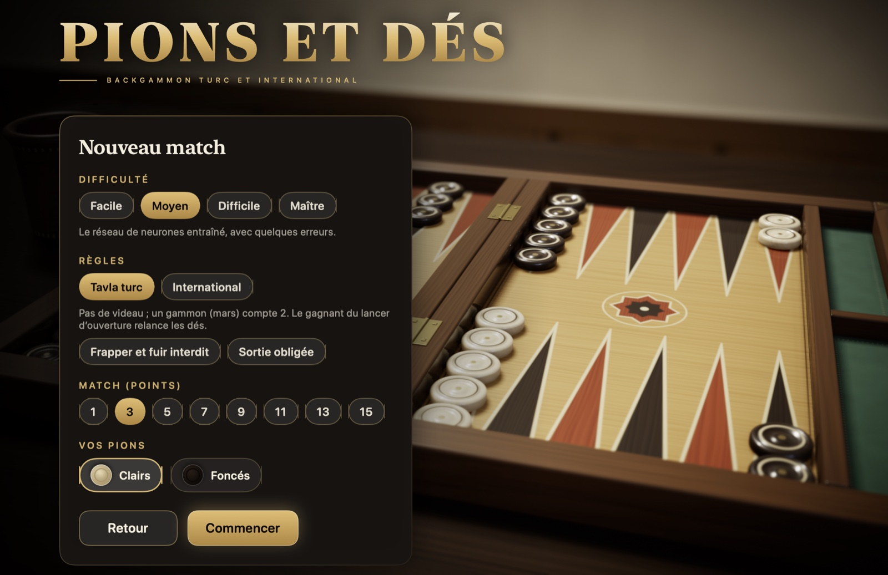
Figure 5.1Le panneau Nouveau match : difficulté, règles, match ou session, et couleur de vos pions.
Difficulté : « Facile » se trompe souvent et convient parfaitement pour apprendre. « Moyen » est un réseau de neurones entraîné qui commet quelques erreurs. « Difficile » est un réseau de neurones entraîné sur des millions de parties. « Maître » calcule en plus toutes les combinaisons de dés possibles.
Règles : « Tavla turc » ou « International ». Leurs différences figurent dans le Tableau 2.1. Quand « Tavla turc » est sélectionné, deux règles traditionnelles apparaissent en dessous : « Frapper et fuir interdit » et « Sortie obligée ». Toutes deux sont désactivées par défaut. Les règles choisies ne changent pas pendant le match.
Match ou session : avec « Match (points) », vous choisissez en combien de points se joue le match : 1, 3, 5, 7, 9, 11, 13 ou 15. En règles internationales, un onglet « Session » s’y ajoute : une session n’a pas de longueur de match, les points de chaque partie sont comptés, et vous terminez la session quand vous voulez. En session apparaissent aussi les options « Règle Jacoby », « Beaver », « Raccoon » et « Doubles automatiques » ; elles sont expliquées dans la rubrique « Règles de match et de session » de la section 3.8. Le tavla turc n’a pas de session.
Vos pions : « Clairs » ou « Foncés ». Quel que soit votre choix, vos pions sont toujours en bas. La couleur de l’icône dépend du style de pions choisi dans les Réglages : avec « Laque rouge et noire », le pion clair est rouge.
Si un match est en cours quand vous en lancez un nouveau, l’application vous demande d’abord confirmation. Le match en cours est enregistré : vous pourrez le reprendre depuis la fiche « Matchs ». La fiche de confirmation affiche aussi le résumé du match qui va commencer. ⌘N déclenche la même confirmation, y compris entre deux parties.
5.2 Lancer les dés et jouer les pions
Quand c’est votre tour, les dés sont lancés d’eux-mêmes : ils sont versés du cornet en cuir sur la moitié droite du tablier. En règles internationales, si vous avez le droit de doubler, l’application attend ; le bouton « Lancer les dés » apparaît dans la moitié droite du tablier, avec le bouton « Doubler » juste en dessous. Vous lancez en cliquant sur le bouton ou sur les dés, ou en appuyant sur Espace. Si « Lancer les dés automatiquement » est désactivé dans les Réglages, le bouton « Lancer les dés » apparaît à chacun de vos tours.
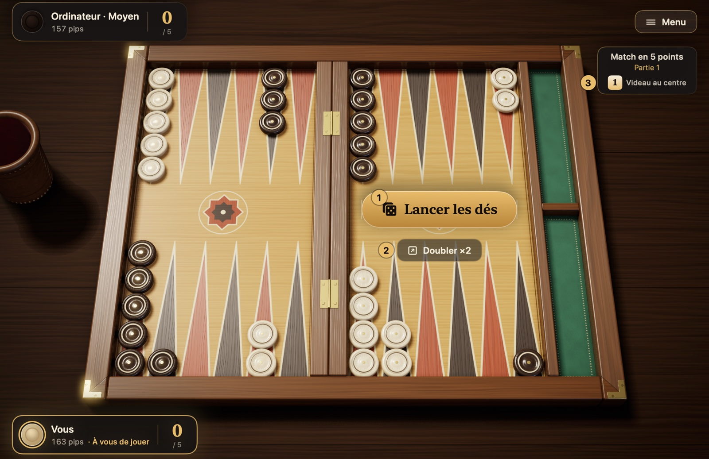
Figure 5.2Votre tour de lancer, quand vous avez le droit de doubler. 1 bouton « Lancer les dés », 2 bouton « Doubler », 3 indicateur du videau.
Une fois les dés lancés, les pions que vous pouvez jouer s’illuminent. Vous jouez un pion de l’une des façons suivantes :
En cliquant : cliquez d’abord sur le pion ; les flèches qu’il peut atteindre sont entourées d’un cercle vert. Cliquez ensuite sur la cible. Une cible où vous frapperiez un blot adverse est marquée d’une mire rouge.
En faisant glisser : saisissez le pion et déposez-le sur la cible.
Rapidement : un double-clic joue le pion avec le dé le plus fort, un clic droit avec le plus faible.
Au clavier : Tab passe d’un pion jouable à l’autre, les touches fléchées choisissent la cible, Retour joue le coup.
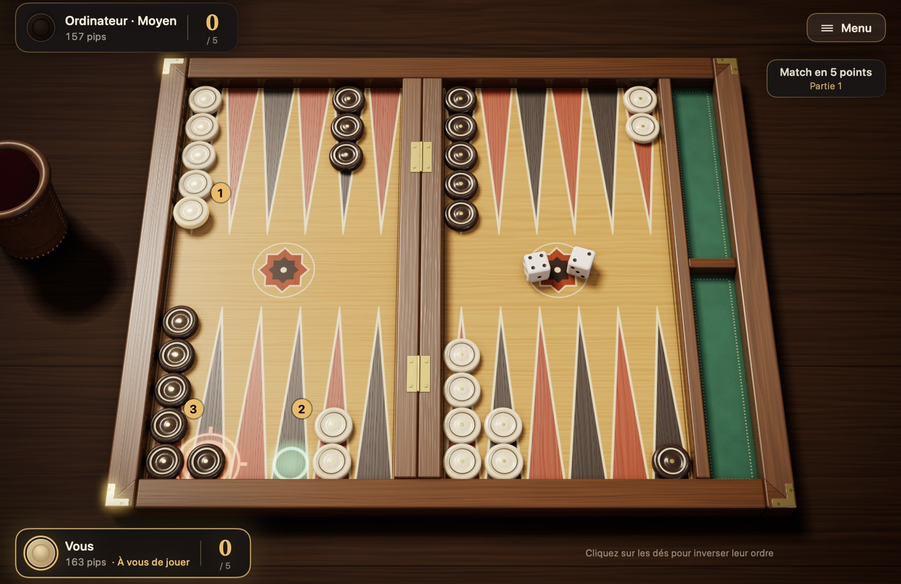
Figure 5.3Un coup. Vous avez fait 4-2, et le pion de la flèche 13 est sélectionné. 1 pion sélectionné, 2 flèche vide qu’il peut atteindre avec le 4 (cercle vert), 3 flèche où il peut frapper le blot adverse avec le 2 (mire rouge).
Pour changer l’ordre dans lequel les dés sont joués, cliquez sur les dés du tablier. Dès que vous jouez votre dernier déplacement, votre tour se termine de lui-même et la main passe à l’adversaire ; si vous n’avez qu’un seul coup légal, l’application le joue à votre place. Si vous préférez valider vous-même votre tour ou annuler des déplacements, désactivez « Valider les coups automatiquement » et activez « Afficher le bouton Annuler » dans les Réglages : c’est alors « Valider » (Retour) qui termine votre tour et, jusque-là, « Annuler » (⌘Z) défait un à un les déplacements joués. Si vous n’avez aucun coup, l’application affiche « Aucun coup possible ! » et la main passe à l’adversaire. Si vous avez un pion sur la barre et que le jan intérieur adverse est entièrement fermé, les dés ne sont même pas lancés : l’écran signale que vous êtes « bloqué » et le tour passe directement.
5.3 Indices et aides au jeu
Le bouton « Indice » est masqué par défaut ; il apparaît en bas à droite dès que vous activez « Afficher le bouton Indice » dans les Réglages. Ce bouton (⌘I) marque sur le tablier le coup que le moteur Maître suggère pour ce tour ; la marque disparaît dès que vous jouez votre premier déplacement. En règles internationales, il conseille aussi pour le videau : avant de lancer, « Suggestion : doubler » ou « Suggestion : ne pas doubler, lancer les dés » ; face à un double de l’ordinateur, « Suggestion : accepter » ou « Suggestion : refuser ». Les indices utilisés sont comptés dans le résumé de fin de partie et dans les statistiques.
La section « Jeu » des Réglages propose des options qui facilitent le jeu ; toutes sont activées par défaut, sauf les boutons « Indice » et « Annuler » :
Lancer les dés automatiquement : les dés sont lancés d’eux-mêmes quand c’est votre tour. Aux tours où vous pouvez doubler, le lancer attend : la décision du videau vous revient. Si l’option est désactivée, vous lancez vous-même à chaque tour, avec le bouton « Lancer les dés » ou la touche Espace.
Valider les coups automatiquement : le tour se termine de lui-même avec le dernier déplacement. Si l’option est désactivée, vous terminez votre tour avec le bouton « Valider » (Retour) ; si « Annuler » est activé, vous pouvez défaire vos déplacements jusque-là.
Jouer les coups forcés automatiquement : s’il n’y a qu’un seul coup légal, l’application le joue et le tour se termine.
Mettre en évidence les pions jouables et Entourer les cibles : activent ou désactivent l’illumination des pions et les cercles verts. Cercles désactivés, seule la cible choisie au clavier est entourée.
Afficher le bouton Indice et Afficher le bouton Annuler : tous deux sont désactivés par défaut : vous ne pouvez ni demander de suggestion ni annuler un déplacement joué. Une fois activés, les boutons apparaissent en bas à droite et les raccourcis ⌘I et ⌘Z fonctionnent aussi. Tant que « Annuler » est désactivé, la suggestion ne se demande qu’avant le premier déplacement.
5.4 Doubler et répondre au videau
Le videau n’existe qu’en règles internationales. Quand c’est votre tour et que le videau est au centre ou de votre côté, cliquez sur le bouton « Doubler » avant de lancer les dés (⌘D). Le bouton indique la valeur que prendra le videau, par exemple « Doubler ×2 ». L’ordinateur répond aussitôt : s’il accepte, le videau passe de son côté et la partie continue ; s’il refuse, vous gagnez la partie.
Quand l’ordinateur double, une fiche apparaît à l’écran :
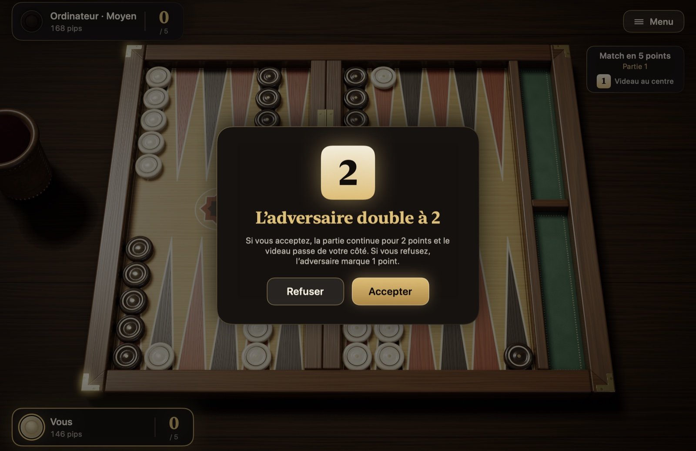
Figure 5.4La fiche de proposition du videau.
Accepter : la partie continue à valeur doublée, et le videau passe de votre côté.
Refuser : vous abandonnez la partie ; l’adversaire marque autant de points que valait le videau avant la proposition.
Beaver : apparaît en session, si l’option « Beaver » est activée. Vous acceptez et redoublez aussitôt, et le videau reste de votre côté.
Indice : apparaît si « Afficher le bouton Indice » est activé dans les Réglages ; affiche la suggestion du moteur Maître pour votre décision.
Si vous doublez et que l’ordinateur répond par un beaver, une fiche semblable apparaît : vous acceptez, vous refusez ou, si « Raccoon » est activé, vous redoublez encore.
La valeur du videau et le joueur qui le détient s’affichent sous les informations du match, en haut à droite : « Videau au centre », « Videau à vous » ou « Videau à l’adversaire ». En match, lors de la première partie jouée quand un joueur est à 1 point du but, le videau n’est pas utilisé, et on y lit « Partie Crawford ».
5.5 Abandonner et terminer une session
Pendant une partie, choisissez « Abandonner » dans le menu Partie ou sur la fiche de pause. Sur la fiche, c’est vous qui proposez le nombre de points de votre abandon : simple, gammon ou, en règles internationales, backgammon. Sous chaque option, la fiche indique d’avance si l’adversaire acceptera. L’adversaire refuse une offre inférieure à ce que promet la position, et la partie continue ; le score du match et le videau entrent aussi en compte. Les niveaux impossibles n’apparaissent pas sur la fiche : si vous avez commencé à sortir vos pions, le gammon et le backgammon ne sont plus possibles, et en match, aucun niveau supérieur à celui qui donne déjà la victoire du match à l’adversaire n’est proposé.
Figure 5.5La fiche « Abandonner ».
L’ordinateur peut lui aussi abandonner de lui-même, dans une course sans espoir.
La session ne se choisit qu’en règles internationales ; elle n’existe pas en tavla turc. Une session n’a pas de longueur de match : c’est vous qui la terminez avec « Terminer la session ». Si vous la terminez entre deux parties, depuis la fiche de fin de partie, elle s’arrête aussitôt. Si vous voulez la terminer en cours de partie, vous abandonnez la partie en cours ; si l’adversaire accepte, les points de la partie sont comptés et la session se termine. Le résultat de la session est enregistré dans les archives et les statistiques.
5.6 Mettre en pause et reprendre un match plus tard
Le bouton « Menu » en haut à droite, ou la touche Échap, met la partie en pause ; appuyez à nouveau sur Échap pour la reprendre. La fiche de pause propose « Reprendre », « Réglages », « Comment jouer », « Historique des coups », « Matchs », « Abandonner » et « Quitter le match ».
Les matchs sont enregistrés automatiquement. « Quitter le match » vous ramène au menu principal, et vous pouvez fermer l’application ; dans le menu principal, « Continuer » rouvre le dernier match là où vous l’aviez laissé. Si vous avez plusieurs matchs, la fiche « Matchs » liste les matchs en cours et les archives des matchs terminés. « Reprendre » vous ramène à un match en cours, « Supprimer » retire celui dont vous ne voulez plus, et « Revoir » rejoue un match terminé. Chaque ligne indique aussi les règles du match et les règles optionnelles activées.
5.7 Fin de partie, analyse et statistiques
À la fin de la partie, une fiche affiche le résultat : les points gagnés, la raison du gammon ou du backgammon, le score du match et le résumé de la partie. Le résumé indique la durée, la moyenne des lancers des deux joueurs, la chance aux dés et les indices que vous avez utilisés. À la fin d’un match, le bouton « Nouveau match » de la fiche lance un nouveau match avec vos derniers choix, sans ouvrir le panneau ; sous le bouton s’affiche le résumé du match qui va commencer.
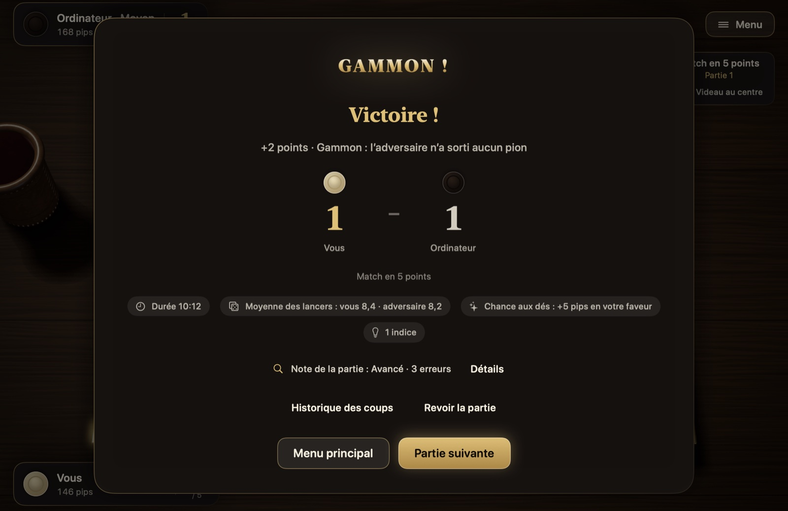
Figure 5.6La fiche de fin de partie.
La « Note de la partie », au centre de la fiche, résulte de l’examen de vos décisions de la partie par le moteur Maître ; elle est accompagnée d’une valeur approximative du PR et du nombre d’erreurs. « Détails » ouvre la fiche d’analyse : les décisions qui vous ont coûté plus de 0,02 point par rapport à la meilleure option y sont listées, votre choix à côté du meilleur. Les décisions de videau en font partie. À la fin d’un match, une note du match est aussi donnée.
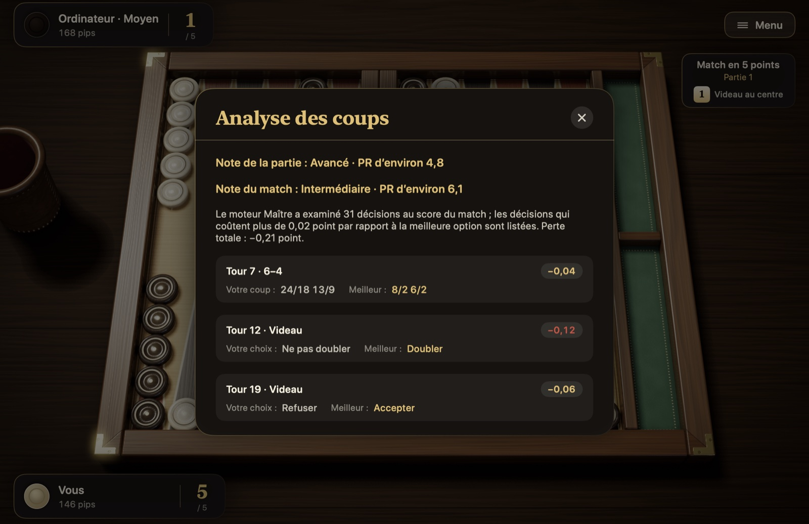
Figure 5.7Analyse des coups.
Les boutons du bas de la fiche de fin de partie permettent d’ouvrir l’historique des coups, de revoir la partie, de revenir au menu principal ou de passer à la partie suivante.
Dans le menu principal, la fiche « Statistiques » affiche les matchs et les parties gagnés et joués, le taux de victoire, les gammons que vous avez gagnés et concédés, votre meilleure série de victoires, les résultats par niveau, la répartition des dés et les matchs récents. Les sessions jouées et les points nets en session sont comptés à part. « Réinitialiser les statistiques » remet tout à zéro.
5.8 Historique des coups, relecture et exportation
« Historique des coups » (⌘L) liste tous les tours des deux joueurs, ainsi que les événements de videau et d’abandon. Si le match compte plusieurs parties, les boutons du haut permettent de choisir la partie.
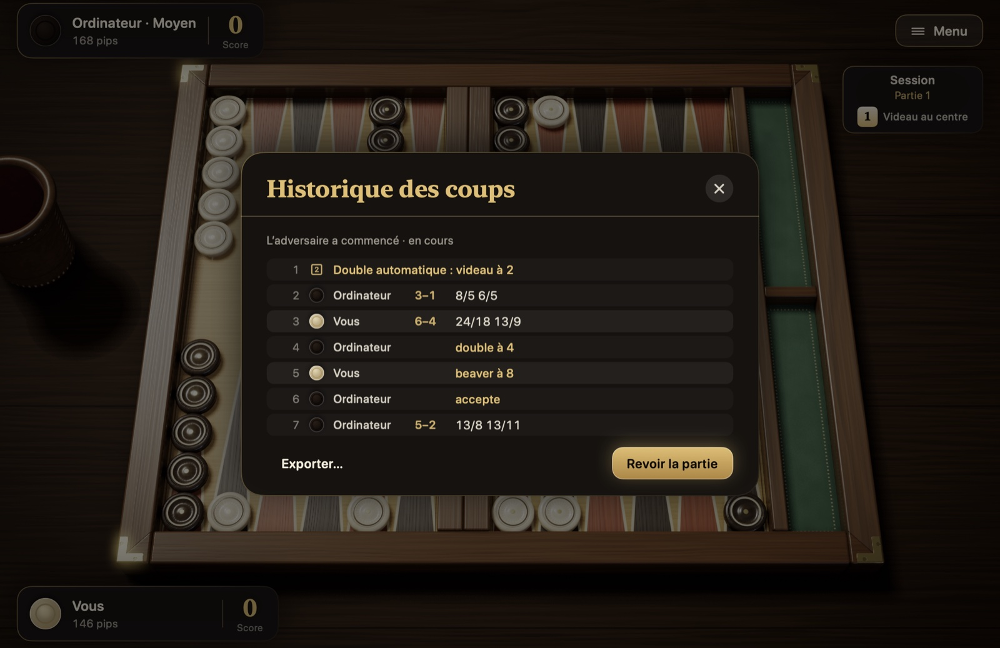
Figure 5.8Historique des coups. L’historique d’une session : double automatique, tours avec leurs dés, double, beaver et acceptation.
Avec « Revoir la partie », vous pouvez revoir depuis le début une partie terminée, avec les vraies animations : ← et → passent d’un tour à l’autre, Espace lance et met en pause la lecture. « Exporter… » enregistre la feuille de match dans trois formats : texte lisible (.txt), .mat, lu par Jellyfish et XG, et le format .sgf de GNU Backgammon. Vous pouvez ainsi analyser votre match avec ces programmes.
5.9 Réglages
Les Réglages sont accessibles depuis le menu principal ou depuis la fiche de pause. Les modifications s’appliquent immédiatement.
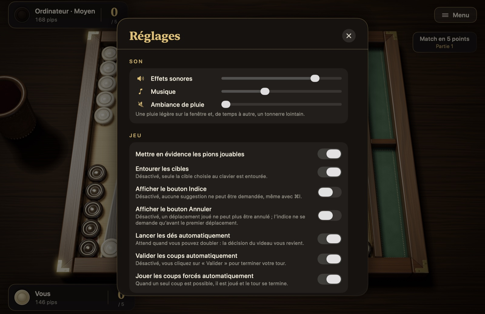
Figure 5.9Réglages.
Son : niveaux séparés pour les effets sonores, la musique et le bruit de la pluie sur la fenêtre.
Jeu : pions jouables, cercles des cibles, boutons Indice et Annuler, lancer automatique, validation automatique et coups forcés ; détails à la section 5.3. Les règles ne se trouvent pas dans les Réglages : les deux règles traditionnelles du tavla turc se choisissent dans le panneau Nouveau match.
Vitesse : vitesse des animations et temps de réflexion de l’adversaire. Quand « Cornet à dés » est désactivé, les dés sont lancés sans cornet, et le lancer est plus rapide.
Apparence : plateau (« Noyer classique », « Marqueterie de nacre », « Érable »), pions (« Buis et ébène », « Marbre et onyx », « Laque rouge et noire »), dés (« Ivoire », « Ébène », « Ambre ») et feutrine (« Vert », « Bordeaux », « Bleu marine »). Le style des pions et des dés change aussi le son ; les icônes de pions à l’écran prennent elles aussi les couleurs du style de pions choisi. « Jan intérieur à gauche » inverse le tablier comme dans un miroir, et les pions sortent vers la gauche. La taille du texte peut être « Normale », « Grande » ou « Très grande ».
Caméra : caméra cinématique (travelling avant au début du match, lent tour en contre-plongée à la fin), zoom et inclinaison de la caméra.
Langue : turc, anglais, français, allemand, espagnol, portugais et italien. Avec « Système », l’application suit la langue du système.
5.10 Raccourcis clavier
Tous les coups sur le tablier peuvent se jouer au clavier, sans souris.
Tableau 5.1 Raccourcis clavier
Touche
Action
Espace
Lance les dés quand un lancer est en attente ; valide le tour si la validation automatique est désactivée
Retour
Joue le pion vers la cible choisie au clavier ; valide le tour si la validation automatique est désactivée
Tab, ⇧Tab
Passe d’un pion jouable à l’autre
Touches fléchées
Passent d’une cible à l’autre pour le pion sélectionné
Échap
Met en pause, et relance la partie à la seconde pression ; ferme une fiche ouverte
⌘Z
Annule le dernier déplacement ; fonctionne quand le bouton « Annuler » est activé
⌘I
Indice ; fonctionne quand le bouton « Indice » est activé
⌘D
Double l’enjeu
⌘L
Ouvre l’historique des coups
⌘N
Nouveau match ; pendant un match, y compris entre deux parties, demande d’abord confirmation
⌘?
Ouvre la fiche « Comment jouer »
← →
En relecture, tour précédent et tour suivant
5.11 Accessibilité
Lecteur d’écran : le tablier se joue avec VoiceOver. Les flèches, la barre, les pions sortis et les dés sont des éléments distincts ; pour chacun, on entend qui y a combien de pions, et s’il est jouable, sélectionné ou ciblé. Vos dés, les coups de l’adversaire et les pions frappés sont annoncés à voix haute.
Réduction des animations : si « Réduire les animations » est activé dans macOS, les animations de caméra, le balancement et la parallaxe du menu, le cornet à dés, les rebonds des pions et la pluie d’or sont désactivés.
Contraste : si le réglage « Augmenter le contraste » de macOS est activé, les textes et les lignes de l’interface sont dessinés de façon plus marquée.
Taille du texte : dans les Réglages, vous pouvez régler la taille du texte sur « Grande » ou « Très grande » ; les fiches et les indicateurs s’agrandissent en conséquence.
Clavier : tous les coups sur le tablier peuvent se jouer au clavier ; les touches sont dans le Tableau 5.1.
Chapitre 6
Aide-mémoire
Ce chapitre sert d’aide-mémoire : questions fréquentes, glossaire et index. Dans le glossaire, la colonne « Voir » renvoie aux sections où chaque terme est expliqué.
6.1 Questions fréquentes
Mon lancer est mauvais : puis-je passer mon tour ? Non. Si les dés permettent un coup, vous êtes obligé de le jouer. On ne passe son tour que si aucun dé ne peut être joué, et cela se fait alors automatiquement.
Puis-je jouer un pion de l’adversaire ? Non. Chaque joueur ne joue que ses propres pions.
Après avoir frappé un pion, puis-je continuer avec le même pion ? En règle internationale, oui : frapper ne met pas fin au voyage du pion, et vous pouvez l’avancer avec le dé restant. Au tavla turc courant, en revanche, il est interdit de frapper et fuir dans son propre jan intérieur. Dans Pions et Dés, quand vous jouez avec les règles turques, cette interdiction s’applique si « Frapper et fuir interdit » a été choisi pour le nouveau match ; elle est désactivée par défaut.
Combien de pions peut-on mettre au maximum sur une flèche ? Il n’y a pas de limite. Vous pouvez empiler autant de pions que vous voulez sur une flèche à vous.
Puis-je commencer la sortie alors que j’ai un pion frappé ? Non. Pour sortir, tous vos pions doivent être dans votre jan intérieur ; un pion sur la barre compte comme étant hors du jan intérieur.
Suis-je obligé d’additionner les deux dés pour les jouer avec un seul pion ? Non. Vous pouvez aussi jouer les deux dés avec deux pions différents. Si vous les jouez avec un seul pion, l’étape intermédiaire doit être ouverte.
Une partie peut-elle se terminer par une égalité ? Non. Comme les joueurs jouent à tour de rôle, l’un des deux finit forcément le premier.
J’ai dû casser une case de mon jan intérieur : est-ce une erreur ? Pas toujours. Parfois, les dés ne laissent pas d’autre choix ; la règle du coup forcé passe avant tout.
Dans Pions et Dés, j’ai joué un pion par erreur : que faire ? Avec les réglages par défaut, un déplacement joué ne peut pas être annulé. Pour pouvoir annuler, activez « Afficher le bouton Annuler » dans les Réglages : vous pouvez alors défaire les déplacements de ce tour jusqu’à ce qu’il se termine. Tant que « Valider les coups automatiquement » est activé, le tour se termine avec le dernier déplacement ; si vous désactivez aussi cette option, vous pouvez annuler tant que vous n’avez pas cliqué sur « Valider ».
Pourquoi mon compte de pips a-t-il soudain augmenté ? L’un de vos pions a été frappé. Le pion envoyé sur la barre retourne au début du parcours, et votre compte de pips augmente de la distance qu’il a perdue.
6.2 Glossaire et index
Tableau 6.1 Glossaire et index
Terme
Signification
Voir
Ancre
Case de deux pions ou plus tenue dans le jan intérieur adverse
Si vous êtes arrivé jusqu’ici, vous connaissez toutes les règles du backgammon, les grands plans de jeu et tous les recoins de Pions et Dés. Le reste s’apprend sur le tablier. Jouez vos premiers matchs au niveau « Facile » ; jetez un œil à l’analyse des parties que vous avez perdues pour voir quelles décisions vous ont coûté des points, puis montez de niveau. Les dés sourient tantôt à vous, tantôt à l’adversaire ; sur le long terme, ce sont vos choix qui font la différence.
Depuis cinq mille ans, le backgammon réunit les gens de part et d’autre d’une table. J’espère que Pions et Dés apportera une petite contribution à cette tradition et vous offrira d’agréables moments. Vos avis et vos suggestions aident à améliorer l’application.